Bernoulli Factory Algorithms
Introduction
This page catalogs algorithms to turn coins biased one way into coins biased another way, also known as Bernoulli factories. Many of them were suggested in (Flajolet et al., 2010)(1), but without step-by-step instructions in many cases. This page provides these instructions to help programmers implement the Bernoulli factories they describe. The Python module bernoulli.py includes implementations of several Bernoulli factories.
This page also contains algorithms to exactly simulate probabilities that are irrational numbers, using only random bits, which is likewise related to the Bernoulli factory problem. Again, many of these were suggested in (Flajolet et al., 2010)(1).
This page is focused on sampling methods that exactly simulate the probability described, without introducing rounding errors or other errors beyond those already present in the inputs (and assuming that we have a source of "truly" random numbers).
About This Document
This is an open-source document; for an updated version, see the source code or its rendering on GitHub. You can send comments on this document on the GitHub issues page. You are welcome to suggest additional Bernoulli factory algorithms, especially—
- specific continued fraction expansions,
- series expansions for the power series algorithms below, and
- algorithms that simulate probability mass functions or probability density functions, with or without a normalizing constant.
Contents
- Introduction
- Contents
- About Bernoulli Factories
- Algorithms
- Algorithms for Functions of λ
- Certain Power Series
- exp(−λ)
- exp(−(λk * x))
- exp(−(λk * (x + m)))
- exp(−(λ + m)k)
- exp(λ)*(1−λ)
- (1−λ)/cos(λ)
- (1−λ) * tan(λ)
- exp(λ * c − c)
- exp(−λ − c)
- 1/(1+λ)
- ln(1+λ)
- 1 − ln(1+λ)
- c * λ * β / (β * (c * λ + d * μ) − (β − 1) * (c + d))
- c * λ / (c * λ + d) or (c/d) * λ / (1 + (c/d) * λ))
- 1 / (c + λ)
- (d + λ) / c
- d / (c + λ)
- (d + μ) / (c + λ)
- λ + μ
- λ − μ
- 1/(c + λ)
- 1 − λ
- ν * λ + (1 − ν) * μ
- λ + μ − (λ * μ)
- (λ + μ) / 2
- arctan(λ) /λ
- arctan(λ)
- cos(λ)
- sin(λ)
- λx/y
- λμ
- sqrt(λ)
- arcsin(λ) + sqrt(1 − λ2) − 1
- arcsin(λ) / 2
- λ * μ
- λ * x/y (linear Bernoulli factories)
- (λ * x/y)i
- ϵ / λ
- Certain Rational Functions
- Bernstein Polynomials
- Certain Algebraic Functions
- Expressions Involving Polylogarithms
- Algorithms for Irrational Constants
- Digit Expansions
- Continued Fractions
- Continued Logarithms
- 1 / φ
- sqrt(2) − 1
- 1/sqrt(2)
- tanh(1/2) or (exp(1) − 1) / (exp(1) + 1)
- arctan(x/y) * y/x
- π / 12
- π / 4
- 1 / π
- (a/b)x/y
- exp(−x/y)
- exp(−z)
- (a/b)z
- 1 / 1 + exp(x / (y * 2prec)) (LogisticExp)
- 1 / 1 + exp(z / 2prec)) (LogisticExp)
- Polylogarithmic Constants
- ζ(3) * 3 / 4 and Other Zeta-Related Constants
- erf(x)/erf(1)
- 2 / (1 + exp(2)) or (1 + exp(0)) / (1 + exp(1))
- (1 + exp(1)) / (1 + exp(2))
- General Algorithms
- Algorithms for Functions of λ
- Open Questions
- Correctness and Performance Charts
- Notes
- Appendix
- Randomized vs. Non-Randomized Algorithms
- Simulating Probabilities vs. Estimating Probabilities
- Convergence of Bernoulli Factories
- Alternative Implementation of Bernoulli Factories
- Correctness Proof for the Continued Logarithm Simulation Algorithm
- Correctness Proof for Continued Fraction Simulation Algorithm 3
- The von Neumann Schema
- Probabilities Arising from the Forsythe Method
- Probabilities Arising from Certain Permutations
- Other Algorithms for exp(−λ)
- Sketch of Derivation of the Algorithm for 1 / π
- License
About Bernoulli Factories
A Bernoulli factory (Keane and O'Brien 1994)(2) is an algorithm that takes an input coin (a method that returns 1, or heads, with an unknown probability, or 0, or tails, otherwise) and returns 0 or 1 with a probability that depends on the input coin's probability of heads. For example, a Bernoulli factory algorithm can take a coin that returns heads with probability λ and produce a coin that returns heads with probability exp(−λ).
A factory function is a function that relates the old probability to the new one. Its domain is [0, 1] and returns a probability in [0, 1]. There are certain requirements for factory functions. As shown by Keane and O'Brien (1994)(2), a function f(λ) can serve as a factory function if and only if f, in a given interval in [0, 1]—
- is continuous everywhere,
- does not go to 0 or 1 exponentially fast, and
- either returns a constant value in [0, 1] everywhere, or returns a value in [0, 1] at each of the points 0 and 1 and a value in (0, 1) at each other point.
As one example, the function f = 2*λ cannot serve as a factory function, since its graph touches 1 somewhere in the open interval (0, 1).
If a function's graph touches 0 or 1 somewhere in (0, 1), papers have suggested dealing with this by modifying the function so it no longer touches 0 or 1 there (for example, f = 2*λ might become f = min(2 * λ, 1 − ϵ) where ϵ is in (0, 1/2) (Keane and O'Brien 1994)(2), (Huber 2014, introduction)(3)), or by somehow ensuring that λ does not come close to the point where the graph touches 0 or 1 (Nacu and Peres 2005, theorem 1)(4).
The next section will show algorithms for a number of factory functions, allowing different kinds of probabilities to be simulated from input coins.
Algorithms
In the following algorithms:
- λ is the unknown probability of heads of the input coin.
- The instruction to "generate a uniform(0, 1) random number" can be implemented—
- by creating a uniform partially-sampled random number (PSRN) with a sign of 1 or positive, an integer part of 0, and an empty fractional part (most accurate), or
- by generating
RNDEXCRANGE(0, 1)orRNDINT(1000)(less accurate).
- The instruction to "generate an exponential random number" can be implemented—
- by creating an empty exponential PSRN (most accurate), or
- by generating
-ln(1/RNDEXCRANGE(0, 1))(less accurate).
- To sample from a random number u means to generate a number that is 1 with probability u and 0 otherwise.
- If the number is a uniform PSRN, call the SampleGeometricBag algorithm with the PSRN and take the result of that call (which will be 0 or 1) (most accurate). (SampleGeometricBag is described in my article on PSRNs.)
- Otherwise, this can be implemented by generating another uniform random number v and generating 1 if v is less than u or 0 otherwise (less accurate).
- Where an algorithm says "if a is less than b", where a and b are random numbers, it means to run the RandLess algorithm on the two numbers (if they are both PSRNs), or do a less-than operation on a and b, as appropriate. (RandLess is described in my article on PSRNs.)
- Where a step in the algorithm says "with probability x" to refer to an event that may or may not happen, then this can be implemented in one of the following ways:
- Convert x to a rational number y/z, then call
ZeroOrOne(y, z). The event occurs if the call returns 0. (Most accurate.) For example, if an instruction says "With probability 3/5, return 1", then implement it as "CallZeroOrOne(3, 5). If the call returns 1, return 1."ZeroOrOneis described in my article on random sampling methods. - Generate a uniform random number v. The event occurs if v is less than x. (Less accurate.)
- Convert x to a rational number y/z, then call
- For best results, the algorithms should be implemented using exact rational arithmetic (such as
Fractionin Python orRationalin Ruby). Floating-point arithmetic is discouraged because it can introduce rounding error.
The algorithms as described here do not always lead to the best performance. An implementation may change these algorithms as long as they produce the same results as the algorithms as described here.
The algorithms assume that a source of independent and unbiased random bits is available, in addition to the input coins. But it's possible to implement these algorithms using nothing but those coins as a source of randomness. See the appendix for details.
Bernoulli factory algorithms that simulate f(λ) are equivalent to unbiased estimators of f(λ). See the appendix for details.
Algorithms for Functions of λ
Certain Power Series
Mendo (2019)(5) gave a Bernoulli factory algorithm for certain functions that can be rewritten as a series of the form—
1 − (c[0] * (1 − λ) + ... + c[i] * (1 − λ)i + 1 + ...),
where c[i] >= 0 are the coefficients of the series and sum to 1. The algorithm follows:
- Let v be 1 and let result be 1.
- Set dsum to 0 and i to 0.
- Flip the input coin. If it returns v, return result.
- If i is equal to or greater than the number of coefficients, set ci to 0. Otherwise, set ci to c[i].
- With probability ci/(1 − dsum), return 1 minus result.
- Add ci to dsum, add 1 to i, and go to step 3.
As pointed out in Mendo (2019)(5), variants of this algorithm work for power series of the form—
- (c[0] * (1 − λ) + ... + c[i] * (1 − λ)i + 1 + ...), or
- (c[0] * λ + ... + c[i] * λi + 1 + ...), or
- 1 − (c[0] * λ + ... + c[i] * λi + 1 + ...).
In the first two cases, replace "let result be 1" in the algorithm with "let result be 0". In the last two cases, replace "let v be 1" with "let v be 0".
(Łatuszyński et al. 2009/2011)(6) gave an algorithm that works for a wide class of series and other constructs that converge to the desired probability from above and from below.
One of these constructs is an alternating series of the form—
d[0] − d[1] * λ + d[2] * λ2 − ...,
where d[i] are all in the interval [0, 1] and form a non-increasing sequence of coefficients.
The following is the general algorithm for this kind of series, called the general martingale algorithm. It takes a list of coefficients and an input coin, and returns 1 with probability given above, and 0 otherwise.
- Let d[0], d[1], etc. be the first, second, etc. coefficients of the alternating series. Set u to d[0], set w to 1, set l to 0, and set n to 1.
- Generate a uniform(0, 1) random number ret.
- If w is not 0, flip the input coin and multiply w by the result of the flip.
- If n is even, set u to l + w * d[n]. Otherwise, set l to u − w * d[n].
- If ret is less than l, return 1. If ret is less than u, go to the next step. If neither is the case, return 0. (If ret is a uniform PSRN, these comparisons should be done via the URandLessThanReal algorithm, which is described in my article on PSRNs.)
- Add 1 to n and go to step 3.
If the alternating series has the form—
d[0] − d[1] * λ2 + d[2] * λ4 − ...,
then modify the general martingale algorithm by adding the following after step 3: "3a. Repeat step 3 once." (Examples of this kind of series are found in sin(λ) and cos(λ).)
exp(−λ)
This algorithm converges quickly everywhere in (0, 1). (In other words, the algorithm is uniformly fast, meaning the average running time is bounded from above for all choices of λ and other parameters (Devroye 1986, esp. p. 717)(7).) This algorithm is adapted from the general martingale algorithm (in "Certain Power Series", above), and makes use of the fact that exp(−λ) can be rewritten as 1 − λ + λ2/2 − λ3/6 + λ4/24 − ..., which is an alternating series whose coefficients are 1, 1, 1/(2!), 1/(3!), 1/(4!), ....
- Set u to 1, set w to 1, set l to 0, and set n to 1.
- Generate a uniform(0, 1) random number ret.
- If w is not 0, flip the input coin, multiply w by the result of the flip, and divide w by n. (This is changed from the general martingale algorithm to take account of the factorial more efficiently in the second and later coefficients.)
- If n is even, set u to l + w. Otherwise, set l to u − w.
- If ret is less than l, return 1. If ret is less than u, go to the next step. If neither is the case, return 0. (If ret is a uniform PSRN, these comparisons should be done via the URandLessThanReal algorithm, which is described in my article on PSRNs.)
- Add 1 to n and go to step 3.
See the appendix for other algorithms.
exp(−(λk * x))
In the following algorithm, which applies the general martingale algorithm, k is an integer 0 or greater, and x is a rational number in the interval [0, 1]. It represents the series 1 − λk*x + λ2*k*x/2! − λ3*k*x/3!, ..., and the coefficients are 1, x, x/(2!), x/(3!), ....
- Special cases: If x is 0, return 1. If k is 0, run the algorithm for exp(−x/y) (given later in this page) with x/y = x, and return the result.
- Set u to 1, set w to 1, set l to 0, and set n to 1.
- Generate a uniform(0, 1) random number ret.
- If w is not 0, flip the input coin k times or until the flip returns 0. If any of the flips returns 0, set w to 0, or if all the flips return 1, divide w by n. Then, multiply w by a number that is 1 with probability x and 0 otherwise.
- If n is even, set u to l + w. Otherwise, set l to u − w.
- If ret is less than l, return 1. If ret is less than u, go to the next step. If neither is the case, return 0. (If ret is a uniform PSRN, these comparisons should be done via the URandLessThanReal algorithm, which is described in my article on PSRNs.)
- Add 1 to n and go to step 4.
exp(−(λk * (x + m)))
In the following algorithm, k and m are both integers 0 or greater, and x is a rational number in the interval [0, 1].
- Call the algorithm for exp(−(λk * x)) m times with k = k and x = 1. If any of these calls returns 0, return 0.
- If x is 0, return 1.
- Call the algorithm for exp(−(λk * x)) once, with k = k and x = x. Return the result of this call.
exp(−(λ + m)k)
In the following algorithm, m and k are both integers 0 or greater.
- If k is 0, run the algorithm for exp(−x/y) (given later on this page) with x/y = 1/1, and return the result.
- If k is 1 and m is 0, run the algorithm for exp(−λ) and return the result.
- Run the algorithm for exp(−x/y) with x/y = mk / 1. If the algorithm returns 0, return 0.
- Run the algorithm for exp(−(λk * x)), with k = k and x = 1. If the algorithm returns 0, return 0.
- If m is 0, return 1.
- Set i to 1, then while i < k:
- Set z to choose(k, i) * mk − i. (Here, choose(k, i) is a binomial coefficient.)
- Run the algorithm for exp(−(λk * x)) z times, with k = i and x = 1. If any of these calls returns 0, return 0.
- Add 1 to i.
- Return 1.
exp(λ)*(1−λ)
(Flajolet et al., 2010)(1):
- Set k and w each to 0.
- Flip the input coin. If it returns 0, return 1.
- Generate a uniform(0, 1) random number U.
- If k > 0 and w is less than U, return 0.
- Set w to U, add 1 to k, and go to step 2.
(1−λ)/cos(λ)
(Flajolet et al., 2010)(1):
- Flip the input coin until the flip returns 0. Then set G to the number of times the flip returns 1 this way.
- If G is odd, return 0.
- Generate a uniform(0, 1) random number U, then set i to 1.
- While i is less than G:
- Generate a uniform(0, 1) random number V.
- If i is odd and V is less than U, return 0.
- If i is even and U is less than V, return 0.
- Add 1 to i, then set U to V.
- Return 1.
(1−λ) * tan(λ)
(Flajolet et al., 2010)(1):
- Flip the input coin until the flip returns 0. Then set G to the number of times the flip returns 1 this way.
- If G is even, return 0.
- Generate a uniform(0, 1) random number U, then set i to 1.
- While i is less than G:
- Generate a uniform(0, 1) random number V.
- If i is odd and V is less than U, return 0.
- If i is even and U is less than V, return 0.
- Add 1 to i, then set U to V.
- Return 1.
exp(λ * c − c)
Used in (Dughmi et al. 2017)(8) to apply an exponential weight (here, c) to an input coin.
- Generate a Poisson(c) random integer, call it N.
- Flip the input coin until the flip returns 0 or the coin is flipped N times. Return 1 if all the coin flips, including the last, returned 1 (or if N is 0); or return 0 otherwise.
exp(−λ − c)
To the best of my knowledge, I am not aware of any article or paper by others that presents this particular Bernoulli factory. In this algorithm, c is an integer that is 0 or greater.
- Run the algorithm for exp(−c/1) described later in this document. Return 0 if the algorithm returns 0.
- Return the result of the algorithm for exp(−λ).
1/(1+λ)
One algorithm is the general martingale algorithm, since when λ is in [0, 1], this function is an alternating series of the form 1 - x + x^2 - x^3 + ..., whose coefficients are 1, 1, 1, 1, .... However, this algorithm converges slowly when λ is very close to 1.
A second algorithm is the so-called "even-parity" construction of (Flajolet et al., 2010)(1). However, this algorithm too converges slowly when λ is very close to 1.
- Flip the input coin. If it returns 0, return 1.
- Flip the input coin. If it returns 0, return 0. Otherwise, go to step 1.
A third algorithm is a special case of the two-coin Bernoulli factory of (Gonçalves et al., 2017)(9) and is uniformly fast, unlike the previous two algorithms. It will be called the two-coin special case in this document.
- With probability 1/2, return 1. (For example, generate an unbiased random bit and return 1 if that bit is 1.)
- Flip the input coin. If it returns 1, return 0. Otherwise, go to step 1.
ln(1+λ)
(Flajolet et al., 2010)(1):
- Generate a uniform(0, 1) random number u.
- Flip the input coin. If it returns 0, flip the coin again and return the result.
- Sample from the number u. If the result is 0, flip the input coin and return the result.
- Flip the input coin. If it returns 0, return 0.
- Sample from the number u. If the result is 0, return 0. Otherwise, go to step 2.
Observing that the even-parity construction used in the Flajolet paper is equivalent to the two-coin special case, which is uniformly fast for all λ parameters, the algorithm above can be made uniformly fast as follows:
- Generate a uniform(0, 1) random number u.
- With probability 1/2, flip the input coin and return the result.
- Sample from the number u., then flip the input coin. If the call and the flip both return 1, return 0. Otherwise, go to step 2.
1 − ln(1+λ)
Invert the result of the algorithm for ln(1+λ) (make it 1 if it's 0 and vice versa).(10)
c * λ * β / (β * (c * λ + d * μ) − (β − 1) * (c + d))
This is the general two-coin algorithm of (Gonçalves et al., 2017)(9) and (Vats et al. 2020)(11). It takes two input coins that each output heads (1) with probability λ or μ, respectively. It also takes a parameter β in the interval [0, 1], which is a so-called "portkey" or early rejection parameter (when β = 1, the formula simplifies to c * λ / (c * λ + d * μ)).
- With probability β, go to step 2. Otherwise, return 0. (For example, call
ZeroOrOnewith β's numerator and denominator, and return 0 if that call returns 0, or go to step 2 otherwise.ZeroOrOneis described in my article on random sampling methods.) - With probability c / (c + d), flip the λ input coin. Otherwise, flip the μ input coin. If the λ input coin returns 1, return 1. If the μ input coin returns 1, return 0. If the corresponding coin returns 0, go to step 1.
c * λ / (c * λ + d) or (c/d) * λ / (1 + (c/d) * λ))
This algorithm, also known as the logistic Bernoulli factory (Huber 2016)(12), (Morina et al., 2019)(13), is a special case of the two-coin algorithm above, but this time uses only one input coin.
- With probability d / (c + d), return 0.
- Flip the input coin. If the flip returns 1, return 1. Otherwise, go to step 1.
(Note that Huber [2016] specifies this Bernoulli factory in terms of a Poisson point process, which seems to require much more randomness on average.)
1 / (c + λ)
In this algorithm, c must be 1 or greater. For example, this algorithm can simulate a probability of the form 1 / z, where z is greater than 0 and made up of an integer part (c) and a fractional part (λ) that can be simulated by a Bernoulli factory. See also the algorithms for continued fractions.
- With probability c / (1 + c), return a number that is 1 with probability 1/c and 0 otherwise.
- Flip the input coin. If the flip returns 1, return 0. Otherwise, go to step 1.
(d + λ) / c
This algorithm currently works only if d and c are integers and 0 <= d < c.
- Generate an integer in [0, c) uniformly at random, call it i.
- If i < d, return 1. If i = d, flip the input coin and return the result. If neither is the case, go to step 1.
d / (c + λ)
In this algorithm, c must be 1 or greater and d must be in the interval [0, c]. See also the algorithms for continued fractions.
- With probability c / (1 + c), return a number that is 1 with probability d/c and 0 otherwise.
- Flip the input coin. If the flip returns 1, return 0. Otherwise, go to step 1.
(d + μ) / (c + λ)
Combines the algorithms in the previous two sections. This algorithm currently works only if d and c are integers and 0 <= d < c.
- With probability c / (1 + c), do the following:
- Generate an integer in [0, c) uniformly at random, call it i.
- If i < d, return 1. If i = d, flip the μ input coin and return the result. If neither is the case, go to the previous substep.
- Flip the λ input coin. If the flip returns 1, return 0. Otherwise, go to step 1.
λ + μ
(Nacu and Peres 2005, proposition 14(iii))(4). This algorithm takes two input coins that simulate λ or μ, respectively, and a parameter ϵ, which must be greater than 0 and chosen such that λ + μ < 1 − ϵ.
- Create a ν input coin that does the following: "With probability 1/2, flip the λ input coin and return the result. Otherwise, flip the μ input coin and return the result."
- Call the 2014 algorithm, the 2016 algorithm, or the 2019 algorithm, described later, using the ν input coin, x/y = 2/1, i = 1 (for the 2019 algorithm), and ϵ = ϵ, and return the result.
λ − μ
(Nacu and Peres 2005, proposition 14(iii-iv))(4). This algorithm takes two input coins that simulate λ or μ, respectively, and a parameter ϵ, which must be greater than 0 and chosen such that λ − μ > ϵ (and should be chosen such that ϵ is slightly less than λ − μ).
- Create a ν input coin that does the following: "With probability 1/2, flip the λ input coin and return 1 minus the result. Otherwise, flip the μ input coin and return the result."
- Call the 2014 algorithm, the 2016 algorithm, or the 2019 algorithm, described later, using the ν input coin, x/y = 2/1, i = 1 (for the 2019 algorithm), and ϵ = ϵ, and return 1 minus the result.
1/(c + λ)
Works only if c > 0.
- With probability c/(1 + c), return a number that is 1 with probability 1/c and 0 otherwise.
- Flip the input coin. If the flip returns 1, return 0. Otherwise, go to step 1.
1 − λ
(Flajolet et al., 2010)(1): Flip the λ input coin and return 0 if the result is 1, or 1 otherwise.
ν * λ + (1 − ν) * μ
(Flajolet et al., 2010)(1): Flip the ν input coin. If the result is 0, flip the λ input coin and return the result. Otherwise, flip the μ input coin and return the result.
λ + μ − (λ * μ)
(Flajolet et al., 2010)(1): Flip the λ input coin and the μ input coin. Return 1 if either flip returns 1, and 0 otherwise.
(λ + μ) / 2
(Nacu and Peres 2005, proposition 14(iii))(4); (Flajolet et al., 2010)(1): With probability 1/2, flip the λ input coin and return the result. Otherwise, flip the μ input coin and return the result.
arctan(λ) /λ
(Flajolet et al., 2010)(1):
- Generate a uniform(0, 1) random number u.
- Sample from the number u twice, and flip the input coin twice. If any of these calls or flips returns 0, return 1.
- Sample from the number u twice, and flip the input coin twice. If any of these calls or flips returns 0, return 0. Otherwise, go to step 2.
Observing that the even-parity construction used in the Flajolet paper is equivalent to the two-coin special case, which is uniformly fast for all λ parameters, the algorithm above can be made uniformly fast as follows:
- Generate a uniform(0, 1) random number u.
- With probability 1/2, return 1.
- Sample from the number u twice, and flip the input coin twice. If all of these calls and flips return 1, return 0. Otherwise, go to step 2.
arctan(λ)
(Flajolet et al., 2010)(1): Call the algorithm for arctan(λ) /λ and flip the input coin. Return 1 if the call and flip both return 1, or 0 otherwise.
cos(λ)
This algorithm adapts the general martingale algorithm for this function's series expansion. In fact, this is a special case of Algorithm 3 of (Łatuszyński et al. 2009/2011)(6) (which is more general than Proposition 3.4, the general martingale algorithm). The series expansion for cos(λ) is 1 − λ2/(2!) + λ4/(4!) − ..., which is an alternating series except the exponent is increased by 2 (rather than 1) with each term. The coefficients are thus 1, 1/(2!), 1/(4!), .... A lower truncation of the series is a truncation of that series that ends with a minus term, and the corresponding upper truncation is the same truncation but without the last minus term. This series expansion meets the requirements of Algorithm 3 because—
- the lower truncation is less than or equal to its corresponding upper truncation almost surely,
- the lower and upper truncations are in the interval [0, 1],
- each lower truncation is greater than or equal to the previous lower truncation almost surely,
- each upper truncation is less than or equal to the previous upper truncation almost surely, and
- the lower and upper truncations have an expected value that approaches λ from below and above.
The algorithm to simulate cos(λ) follows.
- Set u to 1, set w to 1, set l to 0, set n to 1, and set fac to 2.
- Generate a uniform(0, 1) random number ret.
- If w is not 0, flip the input coin. If the flip returns 0, set w to 0. Do this step again. (Note that in the general martingale algorithm, only one coin is flipped in this step. Up to two coins are flipped instead because the exponent increases by 2 rather than 1.)
- If n is even, set u to l + w / fac. Otherwise, set l to u − w / fac. (Here we divide by the factorial of 2-times-n.)
- If ret is less than l, return 1. If ret is less than u, go to the next step. If neither is the case, return 0. (If ret is a uniform PSRN, these comparisons should be done via the URandLessThanReal algorithm, which is described in my article on PSRNs.)
- Add 1 to n, then multiply fac by (n * 2 − 1) * (n * 2), then go to step 3.
sin(λ)
This algorithm is likewise a special case of Algorithm 3 of (Łatuszyński et al. 2009/2011)(6). sin(λ) can be rewritten as λ * (1 − λ2/(3!) + λ4/(5!) − ...), which includes an alternating series where the exponent is increased by 2 (rather than 1) with each term. The coefficients are thus 1, 1/(3!), 1/(5!), .... This series expansion meets the requirements of Algorithm 3 for the same reasons as the cos(λ) series does.
The algorithm to simulate sin(λ) follows.
- Flip the input coin. If it returns 0, return 0.
- Set u to 1, set w to 1, set l to 0, set n to 1, and set fac to 6.
- Generate a uniform(0, 1) random number ret.
- If w is not 0, flip the input coin. If the flip returns 0, set w to 0. Do this step again.
- If n is even, set u to l + w / fac. Otherwise, set l to u − w / fac.
- If ret is less than l, return 1. If ret is less than u, go to the next step. If neither is the case, return 0. (If ret is a uniform PSRN, these comparisons should be done via the URandLessThanReal algorithm, which is described in my article on PSRNs.)
- Add 1 to n, then multiply fac by (n * 2) * (n * 2 + 1), then go to step 3.
λx/y
In the algorithm below, the case where x/y is in (0, 1) is due to recent work by Mendo (2019)(5). The algorithm works only when x/y is 0 or greater.
- If x/y is 0, return 1.
- If x/y is equal to 1, flip the input coin and return the result.
- If x/y is greater than 1:
- Set ipart to floor(x/y) and fpart to
rem(x, y). - If fpart is greater than 0, subtract 1 from ipart, then call this algorithm recursively with x = floor(fpart/2) and y = y, then call this algorithm, again recursively, with x = fpart − floor(fpart/2) and y = y. Return 0 if either call returns 0. (This is done rather than the more obvious approach in order to avoid calling this algorithm with fractional parts very close to 0, because the algorithm runs much more slowly than for fractional parts closer to 1.)
- If ipart is 1 or greater, flip the input coin ipart many times. Return 0 if any of these flips returns 1.
- Return 1.
- Set ipart to floor(x/y) and fpart to
- x/y is less than 1, so set i to 1.
- Flip the input coin; if it returns 1, return 1.
- With probability x/(y*i), return 0.
- Add 1 to i and go to step 5.
Note: When x/y is less than 1, the minimum number of coin flips needed, on average, by this algorithm will grow without bound as λ approaches 0. In fact, no fast Bernoulli factory algorithm can avoid this unbounded growth without additional information on λ (Mendo 2019)(5). See also the appendix, which also shows an alternative way to implement this and other Bernoulli factory algorithms using partially-sampled random numbers (PSRNs), which exploits knowledge of λ but is not the focus of this article since it involves arithmetic.
λμ
This algorithm is based on the previous one, but changed to accept a second input coin (which outputs heads with probability μ) rather than a fixed value for the exponent. To the best of my knowledge, I am not aware of any article or paper by others that presents this particular Bernoulli factory.
- Set i to 1.
- Flip the input coin that simulates the base, λ; if it returns 1, return 1.
- Flip the input coin that simulates the exponent, μ; if it returns 1, return 0 with probability 1/i.
- Add 1 to i and go to step 1.
sqrt(λ)
Use the algorithm for λ1/2.
arcsin(λ) + sqrt(1 − λ2) − 1
(Flajolet et al., 2010)(1). The algorithm given here uses the special two-coin case rather than the even-parity construction.
- Generate a uniform(0, 1) random number u.
- Create a secondary coin μ that does the following: "Sample from the number u twice, and flip the input coin twice. If all of these calls and flips return 1, return 0. Otherwise, return 1."
- Call the algorithm for μ1/2 using the secondary coin μ. If it returns 0, return 0.
- With probability 1/2, flip the input coin and return the result.
- Sample from the number u once, and flip the input coin once. If both the call and flip return 1, return 0. Otherwise, go to step 4.
arcsin(λ) / 2
The Flajolet paper doesn't explain in detail how arcsin(λ)/2 arises out of arcsin(λ) + sqrt(1 − λ2) − 1 via Bernoulli factory constructions, but here is an algorithm.(14) Note, however, that the number of input coin flips is expected to grow without bound as λ approaches 1.
- With probability 1/2, run the algorithm for arcsin(λ) + sqrt(1 − λ2) − 1 and return the result.
- Create a secondary coin μ that does the following: "Flip the input coin twice. If both flips return 1, return 0. Otherwise, return 1." (The coin simulates 1 − λ2.)
- Call the algorithm for μ1/2 using the secondary coin μ. If it returns 0, return 1; otherwise, return 0. (This step effectively cancels out the sqrt(1 − λ2) − 1 part and divides by 2.)
λ * μ
(Flajolet et al., 2010)(1): Flip the λ input coin and the μ input coin. Return 1 if both flips return 1, and 0 otherwise.
λ * x/y (linear Bernoulli factories)
In general, this function will touch 0 or 1 somewhere in [0, 1], when x/y > 0. This makes the function relatively non-trivial to simulate in this case.
Huber has suggested several algorithms for this function over the years.
The first algorithm is called the 2014 algorithm in this document (Huber 2014)(3). It uses three parameters: x, y, and ϵ, such that x/y > 0 and ϵ is greater than 0. When x/y is greater than 1, the ϵ parameter has to be chosen such that λ * x/y < 1 − ϵ, in order to bound the function away from 0 and 1. As a result, some knowledge of λ has to be available to the algorithm. (In fact, as simulation results show, the choice of ϵ is crucial to this algorithm's performance; for best results, ϵ should be chosen such that λ * x/y is slightly less than 1 − ϵ.) The algorithm as described below also includes certain special cases, not mentioned in Huber, to make it more general.
- Special cases: If x is 0, return 0. Otherwise, if x equals y, flip the input coin and return the result. Otherwise, if x is less than y, then: (a) With probability x/y, flip the input coin and return the result; otherwise (b) return 0.
- Set c to x/y, and set k to 23 / (5 * ϵ).
- If ϵ is greater than 644/1000, set ϵ to 644/1000.
- Set i to 1.
- Flip the input coin. If it returns 0, then generate numbers that are each 1 with probability (c − 1) / c and 0 otherwise, until 0 is generated this way, then add 1 to i for each number generated this way (including the last).
- Subtract 1 from i, then if i is 0, return 1.
- If i is less than k, go to step 5.
- If i is k or greater:
- Generate i numbers that are each 1 with probability 2 / (ϵ + 2) or 0 otherwise. If any of those numbers is 0, return 0.
- Multiply c by 2 / (ϵ + 2), divide ϵ by 2, and multiply k by 2.
- If i is 0, return 1. Otherwise, go to step 5.
The second algorithm is called the 2016 algorithm (Huber 2016)(12) and uses the same parameters x, y, and ϵ, and its description uses the same special cases. The difference here is that it involves a so-called "logistic Bernoulli factory", which is replaced in this document with a different one that simulates the same function. When x/y is greater than 1, the ϵ parameter has to be chosen such that λ * x/y <= 1 − ϵ.
- The same special cases as for the 2014 algorithm apply.
- Set m to ceil(1 + 9 / (2 * ϵ)).
- Set β to 1 + 1 / (m − 1).
- Algorithm A is what Huber calls this step. Set s to 1, then while s is greater than 0 and less than m:
- Run the logistic Bernoulli factory algorithm with c/d = β * x/y.
- Set s to s − z * 2 + 1, where z is the result of the logistic Bernoulli factory.
- If s is other than 0, return 0.
- With probability 1/β, return 1.
- Run this algorithm recursively, with x/y = β * x/y and ϵ = 1 − β * (1 − ϵ). If it returns 0, return 0.
- The high-power logistic Bernoulli factory is what Huber calls this step. Set s to 1, then while s is greater than 0 and less than or equal to m minus 2:
- Run the logistic Bernoulli factory algorithm with c/d = β * x/y.
- Set s to s + z * 2 − 1, where z is the result of the logistic Bernoulli factory.
- If s is equal to m minus 1, return 1.
- Subtract 1 from m and go to step 7.
The paper that presented the 2016 algorithm also included a third algorithm, described below, that works only if λ * x / y is known to be less than 1/2. This third algorithm takes three parameters: x, y, and m, and m has to be chosen such that λ * x / y <= m < 1/2.
- The same special cases as for the 2014 algorithm apply.
- Run the logistic Bernoulli factory algorithm with c/d = (x/y) / (1 − 2 * m). If it returns 0, return 0.
- With probability 1 − 2 * m, return 1.
- Run the 2014 algorithm or 2016 algorithm with x/y = (x/y) / (2 * m) and ϵ = 1 − m.
(λ * x/y)i
(Huber 2019)(15). This algorithm, called the 2019 algorithm in this document, uses four parameters: x, y, i, and ϵ, such that x/y > 0, i >= 0 is an integer, and ϵ is greater than 0. When x/y is greater than 1, the ϵ parameter has to be chosen such that λ * x/y < 1 − ϵ. It also has special cases not mentioned in Huber 2019.
- Special cases: If i is 0, return 1. If x is 0, return 0. Otherwise, if x equals y and i equals 1, flip the input coin and return the result.
- Special case: If x is less than y and i = 1, then: (a) With probability x/y, flip the input coin and return the result; otherwise (b) return 0.
- Special case: If x is less than y, then create a secondary coin μ that does the following: "(a) With probability x/y, flip the input coin and return the result; otherwise (b) return 0", then run the algorithm for (μi/1) (described earlier) using this secondary coin.
- Set t to 355/100 and c to x/y.
- If i is 0, return 1.
- While i = t / ϵ:
- Set β to (1 − ϵ / 2) / (1 − ϵ).
- Run the algorithm for (1/β)i (described later). If it returns 0, return 0.
- Multiply c by β, then divide ϵ by 2.
- Run the logistic Bernoulli factory with c/d = c, then set z to the result. Set i to i + 1 − z * 2, then go to step 5.
ϵ / λ
(Lee et al. 2014)(16) This algorithm, in addition to the input coin, takes a parameter ϵ, which must be greater than 0 and be chosen such that ϵ is less than λ.
- If β to max(ϵ, 1/2) and set γ to 1 − (1 − β) / (1 − (β / 2)).
- Create a μ input coin that flips the input coin and returns 1 minus the result.
- With probability ϵ, return 1.
- Run the 2014 algorithm, 2016 algorithm, or 2019 algorithm, with the μ input coin, x/y = 1 / (1 − ϵ), i = 1 (for the 2019 algorithm), and ϵ = γ. If the result is 0, return 0. Otherwise, go to step 3. (Note that running the algorithm this way simulates the probability (λ − ϵ)/(1 − ϵ) or 1 − (1 − λ)/(1 − ϵ)).
Certain Rational Functions
According to (Mossel and Peres 2005)(17), a function can be simulated by a finite-state machine (equivalently, a "probabilistic regular grammar" (Smith and Johnson 2007)(18), (Icard 2019)(19)) if and only if the function can be written as a rational function with rational coefficients, that takes in an input λ in some subset of (0, 1) and outputs a number in the interval (0, 1).
The following algorithm is suggested from the Mossel and Peres paper and from (Thomas and Blanchet 2012)(20). It assumes the rational function is of the form D(λ)/E(λ), where—
- D(λ) = Σi = 0, ..., n λi * (1 − λ)n − i * d[i],
- E(λ) = Σi = 0, ..., n λi * (1 − λ)n − i * e[i],
- every d[i] is less than or equal to the corresponding e[i], and
- each d[i] and each e[i] is an integer or rational number in the interval [0, choose(n, i)], where the upper bound is the total number of n-bit words with i ones.
Here, d[i] is akin to the number of "passing" n-bit words with i ones, and e[i] is akin to that number plus the number of "failing" n-bit words with i ones. choose(n, k) = n!/(k! * (n − k)!) is the binomial coefficient.
The algorithm follows.
- Flip the input coin n times, and let j be the number of times the coin returned 1 this way.
- Call WeightedChoice(NormalizeRatios([e[j] − d[j], d[j], choose(n, j) − e[j]])), where WeightedChoice and NormalizeRatios are given in "Randomization and Sampling Methods". If the call returns 0 or 1, return that result. Otherwise, go to step 1.
Notes:
In the formulas above—
- d[i] can be replaced with δ[i] * choose(n,i), where δ[i] is a rational number in the interval [0, 1] (and thus expresses the probability that a given word is a "passing" word among all n-bit words with i ones), and
- e[i] can be replaced with η[i] * choose(n,i), where η[i] is a rational number in the interval [0, 1] (and thus expresses the probability that a given word is a "passing" or "failing" word among all n-bit words with i ones),
and then δ[i] and η[i] can be seen as control points for two different 1-dimensional Bézier curves, where the δ curve is always on or "below" the η curve. For each curve, λ is the relative position on that curve, the curve begins at δ[0] or η[0], and the curve ends at δ[n] or η[n]. See also the next section.
This algorithm could be modified to avoid additional randomness besides the input coin flips by packing the coin flips into an n-bit word and looking up whether that word is "passing", "failing", or neither, among all n-bit words with j ones, but this is not so trivial to do (especially because in general, a lookup table first has to be built in a setup step, which can be impractical unless 2n is relatively small). Moreover, this approach works only if d[i] and e[i] are integers (or rounded down to integers via the floor function, but this, of course, suffers from rounding error). See also (Thomas and Blanchet 2012)(20).
Bernstein Polynomials
A Bernstein polynomial is a polynomial of the form Σi = 0, ..., n choose(n, i) * λi * (1 − λ)n − i * a[i], where n is the polynomial's degree and a[i] are the control points for the polynomial's corresponding Bézier curve. According to (Goyal and Sigman 2012)(21), a function can be simulated with a fixed number of input coin flips if and only if it's a Bernstein polynomial whose control points are all in the interval [0, 1] (see also (Wästlund 1999, section 4)(22)). They also give an algorithm for simulating these polynomials, which is given below.
- Flip the input coin n times, and let j be the number of times the coin returned 1 this way.
- With probability a[j], return 1. Otherwise, return 0.
Note: Each a[i] acts as a control point for a 1-dimensional Bézier curve, where λ is the relative position on that curve, the curve begins at a[0], and the curve ends at a[n]. For example, given control points 0.2, 0.3, and 0.6, the curve is at 0.2 when λ = 0, and 0.6 when λ = 1. (Note that the curve is not at 0.3 when λ = 1/2; in general, Bézier curves do not cross their control points other than the first and the last.)
Certain Algebraic Functions
(Flajolet et al., 2010)(1) showed how certain algebraic functions can be simulated by generating a bitstring and determining whether that bitstring belongs to a certain class of valid bitstrings. The rules for determining whether a bitstring is valid are called a binary stochastic grammar, which uses an alphabet of only two "letters".
The following algorithm simulates the following algebraic function(23):
- Σk = 0, 1, 2, ... (λk * (1 − λ) * W(k) / βk), or alternatively,
- (1 − λ) * OGF(λ/β),
where—
- β is 2,
- W(k) is the number of valid k-letter words,
- the ordinary generating function OGF(x) = W(0) + W(1) * x + W(2) * x2 + W(3) * x3 + ..., and
- the second formula incorporates a correction to Theorem 3.2 of the paper(24).
(Here, the kth coefficient of OGF(x) corresponds to W(k).) The algorithm follows.
- Set g to 0.
- With probability λ, add 1 to g and repeat this step. Otherwise, go to step 3.
- Return a number that is 1 with probability W(g)/βg, and 0 otherwise. (In the Flajolet paper, this is done by generating a g-letter word uniformly at random and "parsing" that word using a binary stochastic grammar to determine whether that word is valid. Note that the word can be determined to be valid as each of its "letters" is generated.)
An extension to this algorithm, not mentioned in the Flajolet paper, is the use of stochastic grammars with a bigger alphabet than two "letters". For example, in the case of ternary stochastic grammars, the alphabet size is 3 and β is 3 in the algorithm above. In general, for β-ary stochastic grammars, the alphabet size is β, which can be any integer 2 or greater.
Examples: The following are examples from the Flajolet paper.
- A g-letter binary word can be "parsed" as follows to determine whether that word encodes a ternary tree: "3. If g is 0, return 0. Otherwise, set i to 1 and d to 1.; 3a. Generate an unbiased random bit, then subtract 1 from d if that bit is 0, or add 2 to d otherwise.; 3b. Add 1 to i. Then, if i < g and d > 0, go to step 3a.; 3c. Return 1 if d is 0 and i is g, or 0 otherwise."
- If β is 2 and if W(g), the number of valid g-letter words, has the form choose(g, g/t) if g is divisible by t (where t is 2 or greater), or 0 otherwise, step 3 of the algorithm can be done as follows: "3. If g is not divisible by t, return 0. Otherwise, generate g unbiased random bits, then return 1 if exactly g/t zeros were generated this way, or 0 otherwise."
Note: The square-root construction sqrt(1 − λ) (mentioned in the Flajolet paper) can be expressed by a slightly different formula from the one given here, namely Σk = 0, 1, 2, ... (λk * (1 − λ) * choose(k * α, k) / 2k * α), where α = 2. Thus, if the alphabet size is 2, the following replaces step 3 of the algorithm: "3. Generate g * α unbiased random bits, then return 1 if exactly g zeros were generated this way, or 0 otherwise." Interestingly, I have found that if α is an integer 4 or greater, the formula simplifies to involve hypergeometric functions. For example, for α = 6, the formula is (1 − λ) * 5F4(1/6, 2/6, ..., 5/6; 1/5, ..., 4/5; 729 * λ / 3125).
Expressions Involving Polylogarithms
The following algorithm simulates the expression Lir(λ) * (1 / λ − 1), where r is an integer 1 or greater. If λ is 1/2, this expression simplifies to Lir(1/2). See also (Flajolet et al., 2010)(1). Note, however, that even with a relatively small r such as 6, the expression quickly approaches a straight line.
- Flip the input coin until it returns 0, and let t be 1 plus the number of times the coin returned 1 this way.
- Return a number that is 1 with probability 1/tr and 0 otherwise.
Algorithms for Irrational Constants
The following algorithms generate heads with a probability equal to an irrational number. (On the other hand, probabilities that are rational constants are trivial to simulate. If fair coins are available, the ZeroOrOne method, which is described in my article on random sampling methods, should be used. If coins with unknown bias are available, then a randomness extraction method should be used to turn them into fair coins.)
Digit Expansions
Probabilities can be expressed as a digit expansion (of the form 0.dddddd...). The following algorithm returns 1 with probability p and 0 otherwise, where p is a probability in the interval [0, 1). Note that the number 0 is also an infinite digit expansion of zeros, and the number 1 is also an infinite digit expansion of base-minus-ones. Irrational numbers always have infinite digit expansions, which must be calculated "on-the-fly".
In the algorithm (see also (Brassard et al., 2019)(25), (Devroye 1986, p. 769)(7)), BASE is the digit base, such as 2 for binary or 10 for decimal.
- Set
uto 0 andkto 1. - Set
uto(u * BASE) + v, wherevis a random integer in the interval [0,BASE) (such asRNDINTEXC(BASE), or simply an unbiased random bit ifBASEis 2). Setpktop's digit expansion up to thekdigits after the point. Example: Ifpis π/4,BASEis 10, andkis 5, thenpk = 78539. - If
pk + 1 <= u, return 0. Ifpk - 2 >= u, return 1. If neither is the case, add 1 tokand go to step 2.
Continued Fractions
The following algorithm simulates a probability expressed as a simple continued fraction of the following form: 0 + 1 / (a[1] + 1 / (a[2] + 1 / (a[3] + ... ))). The a[i] are the partial denominators, none of which may have an absolute value less than 1. Inspired by (Flajolet et al., 2010, "Finite graphs (Markov chains) and rational functions")(1), I developed the following algorithm.
Algorithm 1. This algorithm works only if each a[i]'s absolute value is 1 or greater and a[1] is positive, but otherwise, each a[i] may be negative and/or a non-integer. The algorithm begins with pos equal to 1. Then the following steps are taken.
- Set k to a[pos].
- If the partial denominator at pos is the last, return a number that is 1 with probability 1/k and 0 otherwise.
- If a[pos] is less than 0, set kp to k − 1 and s to 0. Otherwise, set kp to k and s to 1. (This step accounts for negative partial denominators.)
- With probability kp/(1+kp), return a number that is 1 with probability 1/kp and 0 otherwise.
- Run this algorithm recursively, but with pos = pos + 1. If the result is s, return 0. Otherwise, go to step 4.
A generalized continued fraction has the form 0 + b[1] / (a[1] + b[2] / (a[2] + b[3] / (a[3] + ... ))). The a[i] are the same as before, but the b[i] are the partial numerators. The following are two algorithms to simulate a probability in the form of a generalized continued fraction.
Algorithm 2. This algorithm works only if each b[i]/a[i] is 1 or less, but otherwise, each b[i] and each a[i] may be negative and/or a non-integer. This algorithm employs an equivalence transform from generalized to simple continued fractions. The algorithm begins with pos and r both equal to 1. Then the following steps are taken.
- Set r to 1 / (r * b[pos]), then set k to a[pos] * r. (k is the partial denominator for the equivalent simple continued fraction.)
- If the partial numerator/denominator pair at pos is the last, return a number that is 1 with probability 1/abs(k) and 0 otherwise.
- Set kp to abs(k) and s to 1.
- Set r2 to 1 / (r * b[pos + 1]). If a[pos + 1] * r2 is less than 0, set kp to kp − 1 and s to 0. (This step accounts for negative partial numerators and denominators.)
- With probability kp/(1+kp), return a number that is 1 with probability 1/kp and 0 otherwise.
- Run this algorithm recursively, but with pos = pos + 1 and r = r. If the result is s, return 0. Otherwise, go to step 5.
Algorithm 3. This algorithm works only if each b[i]/a[i] is 1 or less and if each b[i] and each a[i] is greater than 0, but otherwise, each b[i] and each a[i] may be a non-integer. The algorithm begins with pos equal to 1. Then the following steps are taken.
- If the partial numerator/denominator pair at pos is the last, return a number that is 1 with probability b[pos]/a[pos] and 0 otherwise.
- With probability a[pos]/(1 + a[pos]), return a number that is 1 with probability b[pos]/a[pos] and 0 otherwise.
- Run this algorithm recursively, but with pos = pos + 1. If the result is 1, return 0. Otherwise, go to step 2.
See the appendix for a correctness proof of Algorithm 3.
Notes:
If any of these algorithms encounters a probability outside the interval [0, 1], the entire algorithm will fail for that continued fraction.
These algorithms will work for continued fractions of the form "1 − ..." (rather than "0 + ...") if—
- before running the algorithm, the first partial numerator and denominator have their sign removed, and
- after running the algorithm, 1 minus the result (rather than just the result) is taken.
These algorithms are designed to allow the partial numerators and denominators to be calculated "on the fly".
- The following is an alternative way to write Algorithm 1, which better shows the inspiration because it shows how the "even parity construction" (or the two-coin special case) as well as the "1 − x" construction can be used to develop rational number simulators that are as big as their continued fraction expansions, as suggested in the cited part of the Flajolet paper. However, it only works if the size of the continued fraction expansion (here, size) is known in advance.
- Set i to size.
- Create an input coin that does the following: "Return a number that is 1 with probability 1/a[size] or 0 otherwise".
- While i is 1 or greater:
- Set k to a[i].
- Create an input coin that takes the previous input coin and k and does the following: "(a) With probability k/(1+k), return a number that is 1 with probability 1/k and 0 otherwise; (b) Flip the previous input coin. If the result is 1, return 0. Otherwise, go to step (a)". (The probability k/(1+k) is related to λ/(1+λ) = 1 − 1/(1+λ), which involves the even-parity construction—or the two-coin special case—for 1/(1+λ) as well as complementation for "1 − x".)
- Subtract 1 from i.
- Flip the last input coin created by this algorithm, and return the result.
Continued Logarithms
The continued logarithm (Gosper 1978)(26), (Borwein et al., 2016)(27) of a number in (0, 1) has the following continued fraction form: 0 + (1 / 2c[1]) / (1 + (1 / 2c[2]) / (1 + ...)), where c[i] are the coefficients of the continued logarithm and all 0 or greater. I have come up with the following algorithm that simulates a probability expressed as a continued logarithm expansion.
The algorithm begins with pos equal to 1. Then the following steps are taken.
- If the coefficient at pos is the last, return a number that is 1 with probability 1/(2c[pos]) and 0 otherwise.
- With probability 1/2, return a number that is 1 with probability 1/(2c[pos]) and 0 otherwise.
- Run this algorithm recursively, but with pos = pos + 1. If the result is 1, return 0. Otherwise, go to step 2.
For a correctness proof, see the appendix.
1 / φ
This algorithm uses the algorithm described in the section on continued fractions to simulate 1 divided by the golden ratio, whose continued fraction's partial denominators are 1, 1, 1, 1, ....
- With probability 1/2, return 1.
- Run this algorithm recursively. If the result is 1, return 0. Otherwise, go to step 1.
sqrt(2) − 1
Another example of a continued fraction is that of the fractional part of the square root of 2, where the partial denominators are 2, 2, 2, 2, .... The algorithm to simulate this number is as follows:
- With probability 2/3, generate an unbiased random bit and return that bit.
- Run this algorithm recursively. If the result is 1, return 0. Otherwise, go to step 1.
1/sqrt(2)
This third example of a continued fraction shows how to simulate a probability 1/z, where z > 1 has a known simple continued fraction expansion. In this case, the partial denominators are as follows: floor(z), a[1], a[2], ..., where the a[i] are z's partial denominators (not including z's integer part). In the example of 1/sqrt(2), the partial denominators are 1, 2, 2, 2, ..., where 1 comes first since floor(sqrt(2)) = 1. The algorithm to simulate 1/sqrt(2) is as follows:
The algorithm begins with pos equal to 1. Then the following steps are taken.
- If pos is 1, return 1 with probability 1/2. If pos is greater than 1, then with probability 2/3, generate an unbiased random bit and return that bit.
- Run this algorithm recursively, but with pos = pos + 1. If the result is 1, return 0. Otherwise, go to step 1.
tanh(1/2) or (exp(1) − 1) / (exp(1) + 1)
The algorithm begins with k equal to 2. Then the following steps are taken.
- With probability k/(1+k), return a number that is 1 with probability 1/k and 0 otherwise.
- Run this algorithm recursively, but with k = k + 4. If the result is 1, return 0. Otherwise, go to step 1.
arctan(x/y) * y/x
(Flajolet et al., 2010)(1):
- Generate a uniform(0, 1) random number u.
- Generate a number that is 1 with probability x * x/(y * y), or 0 otherwise. If the number is 0, return 1.
- Sample from the number u twice. If either of these calls returns 0, return 1.
- Generate a number that is 1 with probability x * x/(y * y), or 0 otherwise. If the number is 0, return 0.
- Sample from the number u twice. If either of these calls returns 0, return 0. Otherwise, go to step 2.
Observing that the even-parity construction used in the Flajolet paper is equivalent to the two-coin special case, which is uniformly fast, the algorithm above can be made uniformly fast as follows:
- Generate a uniform(0, 1) random number u.
- With probability 1/2, return 1.
- With probability x * x/(y * y), sample from the number u twice. If both of these calls return 1, return 0.
- Go to step 2.
π / 12
Two algorithms:
- First algorithm: Use the algorithm for arcsin(1/2) / 2. Where the algorithm says to "flip the input coin", instead generate an unbiased random bit.
- Second algorithm: With probability 2/3, return 0. Otherwise, run the algorithm for π / 4 and return the result.
π / 4
(Flajolet et al., 2010)(1):
- Generate a random integer in the interval [0, 6), call it n.
- If n is less than 3, return the result of the algorithm for arctan(1/2) * 2. Otherwise, if n is 3, return 0. Otherwise, return the result of the algorithm for arctan(1/3) * 3.
1 / π
(Flajolet et al., 2010)(1):
- Set t to 0.
- With probability 1/4, add 1 to t and repeat this step. Otherwise, go to step 3.
- With probability 1/4, add 1 to t and repeat this step. Otherwise, go to step 4.
- With probability 5/9, add 1 to t.
- Generate 2*t unbiased random bits, and return 0 if there are more zeros than ones generated this way or more ones than zeros. (Note that this condition can be checked even before all the bits are generated this way.) Do this step two more times.
- Return 1.
For a sketch of how this algorithm is derived, see the appendix.
(a/b)x/y
In the algorithm below, a, b, x, and y are integers, and the case where x/y is in (0, 1) is due to recent work by Mendo (2019)(5). This algorithm works only if—
- x/y is 0 or greater and a/b is in the interval [0, 1], or
- x/y is less than 0 and a/b is 1 or greater.
The algorithm follows.
- If x/y is less than 0, swap a and b, and remove the sign from x/y. If a/b is now no longer in the interval [0, 1], return an error.
- If x/y is equal to 1, return 1 with probability a/b and 0 otherwise.
- If x is 0, return 1. Otherwise, if a is 0, return 0. Otherwise, if a equals b, return 1.
- If x/y is greater than 1:
- Set ipart to floor(x/y) and fpart to
rem(x, y). - If fpart is greater than 0, subtract 1 from ipart, then call this algorithm recursively with x = floor(fpart/2) and y = y, then call this algorithm, again recursively, with x = fpart − floor(fpart/2) and y = y. Return 0 if either call returns 0. (This is done rather than the more obvious approach in order to avoid calling this algorithm with fractional parts very close to 0, because the algorithm runs much more slowly than for fractional parts closer to 1.)
- If ipart is 1 or greater, generate a random number that is 1 with probability aipart/bipart or 0 otherwise. (Or generate ipart many random numbers that are each 1 with probability a/b or 0 otherwise, then multiply them all into one number.) If that number is 0, return 0.
- Return 1.
- Set ipart to floor(x/y) and fpart to
- Set i to 1.
- With probability a/b, return 1.
- Otherwise, with probability x/(y*i), return 0.
- Add 1 to i and go to step 6.
exp(−x/y)
This algorithm takes integers x >= 0 and y > 0 and outputs 1 with probability exp(-x/y) or 0 otherwise. It originates from (Canonne et al. 2020)(28).
- Special case: If x is 0, return 1. (This is because the probability becomes
exp(0) = 1.) - If
x > y(so x/y is greater than 1), call this algorithm (recursively)floor(x/y)times with x = y = 1 and once with x = x − floor(x/y) * y and y = y. Return 1 if all these calls return 1; otherwise, return 0. - Set r to 1 and i to 1.
- Return r with probability (y * i − x) / (y * i).
- Set r to 1 − r, add 1 to i, and go to step 4.
exp(−z)
This algorithm is similar to the previous algorithm, except that the exponent, z, can be any real number 0 or greater, as long as z can be rewritten as the sum of one or more components whose fractional parts can each be simulated by a Bernoulli factory algorithm that outputs heads with probability equal to that fractional part. (This makes use of the identity exp(−a) = exp(−b) * exp(−c).)
More specifically:
- Decompose z into n > 0 positive components that sum to z. For example, if z = 3.5, it can be decomposed into only one component, 3.5 (whose fractional part is trivial to simulate), and if z = π, it can be decomposed into four components that are all (π / 4), which has a not-so-trivial simulation described earlier on this page.
- For each component LC[i] found this way, let LI[i] be floor(LC[i]) and let LF[i] be LC[i] − floor(LC[i]) (LC[i]'s fractional part).
The algorithm is then as follows:
- For each component LC[i], call the algorithm for exp(− LI[i]/1), and call the general martingale algorithm adapted for exp(−λ) using the input coin that simulates LF[i]. If any of these calls returns 0, return 0; otherwise, return 1. (See also (Canonne et al. 2020)(28).)
(a/b)z
This algorithm is similar to the previous algorithm for powering, except that the exponent, z, can be any real number 0 or greater, as long as z can be rewritten as the sum of one or more components whose fractional parts can each be simulated by a Bernoulli factory algorithm that outputs heads with probability equal to that fractional part. This algorithm makes use of a similar identity as for exp and works only if z is 0 or greater and a/b is in the interval [0, 1].
Decompose z into LC[i], LI[i], and LF[i] just as for the exp(− z) algorithm. The algorithm is then as follows.
- If z is 0, return 1. Otherwise, if a is 0, return 0. Otherwise, for each component LC[i] (until the algorithm returns a number):
- Call the algorithm for (a/b)LI[i]/1. If it returns 0, return 0.
- Set j to 1.
- Generate a random number that is 1 with probability a/b and 0 otherwise. If that number is 1, abort these steps and move on to the next component or, if there are no more components, return 1.
- Flip the input coin that simulates LF[i] (which is the exponent); if it returns 1, return 0 with probability 1/j.
- Add 1 to j and go to substep 2.
1 / 1 + exp(x / (y * 2prec)) (LogisticExp)
This is the probability that the bit at prec (the precth bit after the point) is set for an exponential random number with rate x/y. This algorithm is a special case of the logistic Bernoulli factory.
- With probability 1/2, return 1.
- Call the algorithm for exp(− x/(y * 2prec)). If the call returns 1, return 1. Otherwise, go to step 1.
1 / 1 + exp(z / 2prec)) (LogisticExp)
This is similar to the previous algorithm, except that z can be any real number described in the algorithm for exp(−z).
Decompose z into LC[i], LI[i], and LF[i] just as for the exp(−z) algorithm. The algorithm is then as follows.
- For each component LC[i], create an input coin that does the following: "(a) With probability 1/(2prec), return 1 if the input coin that simulates LF[i] returns 1; (b) Return 0".
- Return 0 with probability 1/2.
- Call the algorithm for exp(− x/y) with x = Σi LI[i] and y = 2prec. If this call returns 0, go to step 2.
- For each component LC[i], call the algorithm for exp(−λ), using the corresponding input coin for LC[i] created in step 1. If any of these calls returns 0, go to step 2. Otherwise, return 1.
Polylogarithmic Constants
The following algorithm simulates a polylogarithmic constant of the form Lir(1/2), where r is an integer 1 or greater. See (Flajolet et al., 2010)(1) and "Convex Combinations" (the algorithm works by decomposing the series forming the polylogarithmic constant into g(i) = (1/2)i, which sums to 1, and hi() = ir, where i >= 1).
- Set t to 1.
- With probability 1/2, add 1 to t and repeat this step. Otherwise, go to step 3.
- Return a number that is 1 with probability 1/tr and 0 otherwise.
ζ(3) * 3 / 4 and Other Zeta-Related Constants
(Flajolet et al., 2010)(1). It can be seen as a triple integral whose integrand is 1/(1 + a * b * c), where a, b, and c are uniform random numbers. This algorithm is given below, but using the two-coin special case instead of the even-parity construction. Note that the triple integral in section 5 of the paper is ζ(3) * 3 / 4, not ζ(3) * 7 / 8.
- Generate three uniform(0,1) random numbers.
- With probability 1/2, return 1.
- Sample from each of the three numbers generated in step 1. If all three calls return 1, return 0. Otherwise, go to step 2. (This implements a triple integral involving the uniform random numbers.)
This can be extended to cover any constant of the form ζ(k) * (1 − 2−(k − 1)) where k >= 2 is an integer, as suggested slightly by the Flajolet paper when it mentions ζ(5) * 31 / 32 (which should probably read ζ(5) * 15 / 16 instead), using the following algorithm.
- Generate k uniform(0,1) random numbers.
- With probability 1/2, return 1.
- Sample from each of the k numbers generated in step 1. If all k calls return 1, return 0. Otherwise, go to step 2.
erf(x)/erf(1)
In the following algorithm, x is a real number in the interval [0, 1].
- Generate a uniform(0, 1) random number, call it ret.
- Set u to ret, and set k to 1.
- (In this and the next step, we create v, which is the maximum of two uniform [0, 1] random numbers.) Generate two uniform random numbers, call them a and b.
- If a is less than b, set v to b. Otherwise, set v to a.
- If v is less than u, set u to v, then add 1 to k, then go to step 3.
- If k is odd, return 1 if ret is less than x, or 0 otherwise. (If ret is implemented as a uniform PSRN, this comparison should be done via the URandLessThanReal algorithm, which is described in my article on PSRNs.)
- Go to step 1.
In fact, this algorithm takes advantage of a theorem related to the Forsythe method of random sampling (Forsythe 1972)(29). See the section "Probabilities Arising from the Forsythe Method" in the appendix for more information.
2 / (1 + exp(2)) or (1 + exp(0)) / (1 + exp(1))
This algorithm takes advantage of formula 2 mentioned in the section "Probabilities Arising from the Forsythe Method" in the appendix. Here, the relevant probability is rewritten as 1 − (∫(−∞, 1) (1 − exp(−max(0, min(1, z)))) * exp(−z) dz) / (∫(−∞, ∞) (1 − exp(−max(0, min(1, z))) * exp(−z) dz).
- Generate an exponential random number ex, then set k to 1.
- Set u to ex.
- Generate a uniform random number v.
- Set stop to 1 if u is less than v, and 0 otherwise.
- If stop is 1 and k is even, return a number that is 0 if ex is less than 1, and 1 otherwise. Otherwise, if stop is 1, go to step 1.
- Set u to v, then add 1 to k, then go to step 3.
(1 + exp(1)) / (1 + exp(2))
This algorithm takes advantage of the theorem mentioned in the section "Probabilities Arising from the Forsythe Method" in the appendix. Here, the relevant probability is rewritten as 1 − (∫(−∞, 1/2) exp(−max(0, min(1, z))) * exp(−z) dz) / (∫(−∞, ∞) exp(−max(0, min(1, z)) * exp(−z) dz).
- Generate an exponential random number ex, then set k to 1.
- Set u to ex.
- Generate a uniform random number v.
- Set stop to 1 if u is less than v, and 0 otherwise.
- If stop is 1 and k is odd, return a number that is 0 if ex is less than 1/2, and 1 otherwise. Otherwise, if stop is 1, go to step 1.
- Set u to v, then add 1 to k, then go to step 3.
General Algorithms
Convex Combinations
Assume we have one or more input coins hi(λ) that returns heads with a probability that depends on λ. (The number of coins may be infinite.) The following algorithm chooses one of these coins at random then flips that coin. Specifically, the algorithm simulates the following function: g(0) * h0(λ) + g(1) * h1(λ) + ..., where g(i) is the probability that coin i will be chosen, hi is the function simulated by coin i, and all the g(i) sum to 1. See (Wästlund 1999, Theorem 2.7)(22). (Alternatively, the algorithm can be seen as simulating E[hX(λ)], that is, the expected or average value of hX where X is the number that identifies the randomly chosen coin.)
- Generate a random integer X in some way. For example, it could be a uniform random integer in [1, 6], or it could be a Poisson random number.
- Flip the coin represented by X and return the result.
Examples:
- Example 1. Generate a Poisson random number X, then flip the input coin. With probability 1/(1+X), return the result of the coin flip; otherwise, return 0.
- Example 2. Generate a Poisson(μ) random number X and return 1 if X is 0, or 0 otherwise. This is a Bernoulli factory for exp(−μ) mentioned earlier, and corresponds to g(i) being the Poisson(μ) probabilities and hi() returning 1 if i is 0, and 0 otherwise.
- Example 3. Bernoulli Race (Dughmi et al. 2017)(8): Say we have n coins, then choose one of them uniformly at random and flip that coin. If the flip returns 1, return X; otherwise, repeat this algorithm. This algorithm chooses a random coin based on its probability of heads.
Simulating the Probability Generating Function
The following algorithm is a special case of the convex combination method. It generates heads with probability E[λX], that is, the expected or average value of λX. E[λX] is the probability generating function, also known as factorial moment generating function, for the distribution of X (Dughmi et al. 2017)(8).
- Generate a random integer X in some way. For example, it could be a uniform random integer in [1, 6], or it could be a Poisson random number.
- Flip the input coin until the flip returns 0 or the coin is flipped X times. Return 1 if all the coin flips, including the last, returned 1 (or if X is 0); or return 0 otherwise.
Integrals
(Flajolet et al., 2010)(1) showed how to turn an algorithm that simulates f(λ) into an algorithm that simulates the following integral:
- (1/λ) ∫[0, λ] f(u) du, or equivalently,
- ∫[0, 1] f(u * λ) du.
This can be done by modifying the algorithm as follows:
- Generate a uniform(0, 1) random number u at the start of the algorithm.
- Instead of flipping the input coin, flip a coin that does the following: "Flip the input coin, then sample from the number u. Return 1 if both the call and the flip return 1, and return 0 otherwise."
I have found that it's possible to simulate the following integral, namely—
- ∫[a, b] f(u) du,
where [a, b] is [0, 1] or a closed interval therein, using different changes to the algorithm, namely:
- Add the following step at the start of the algorithm: "Generate a uniform(0, 1) random number u at the start of the algorithm. Then if u is less than a or is greater than b, repeat this step. (If u is a uniform PSRN, these comparisons should be done via the URandLessThanReal algorithm.)"
- Instead of flipping the input coin, flip a coin that does the following: "Sample from the number u return the result."
- If the algorithm would return 1, it returns 0 instead with probability 1 − (b − a).
Open Questions
- Is there a simple Bernoulli factory algorithm that can simulate the probability (1+exp(k))/(1+exp(k+1)), without relying on floating-point arithmetic?
- Is there a simple Bernoulli factory algorithm that can simulate the probability equal to Euler's constant γ, without relying on floating-point arithmetic? This repeats an open question given in (Flajolet et al., 2010)(1).
- See the open questions found in the section "Probabilities Arising from Certain Permutations" in the appendix.
Correctness and Performance Charts
The following charts show the correctness of many of the algorithms on this page and show their performance in terms of the number of bits they use on average. For each algorithm, and for each of 100 λ values evenly spaced from 0.0001 to 0.9999:
- 500 runs of the algorithm were done. Then...
- The number of bits used by the runs were averaged, as were the return values of the runs (since the return value is either 0 or 1, the mean return value will be in the interval [0, 1]). The number of bits used included the number of bits used to produce each coin flip, assuming the coin flip procedure for λ was generated using the
Bernoulli#coin()method in bernoulli.py, which produces that probability in an optimal or near-optimal way.
For each algorithm, if a single run was detected to use more than 5000 bits for a given λ, the entire data point for that λ was suppressed in the charts below.
In addition, for each algorithm, a chart appears showing the minimum number of input coin flips that any fast Bernoulli factory algorithm will need on average to simulate the given function, based on work by Mendo (2019)(5). Note that some functions require a growing number of coin flips as λ approaches 0 or 1. Note that for the 2014, 2016, and 2019 algorithms—
- an ϵ of 1 − (x + c) * 1.001 was used (or 0.0001 if ϵ would be greater than 1), and
- an ϵ of (x − c) * 0.9995 for the subtraction variants.
Points with invalid ϵ values were suppressed. For the low-mean algorithm, an m of max(0.49999, xc1.02) was used unless noted otherwise.
The Charts
| Algorithm | Simulated Mean | Average Bits Consumed | Coin Flips |
|---|---|---|---|
| (1-x)*tan(x) |  |
||
| (1-x)/cos(x) |  |
 |
 |
| (1/3)*x/(1+(1/3)*x) |  |
 |
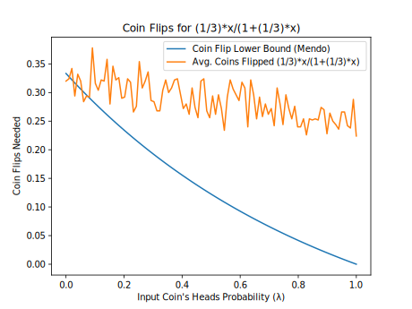 |
| (2/3)*x/(1+(2/3)*x) | |||
| (3/2)*x/(1+(3/2)*x) |  |
 |
 |
| 0.5*x/(1+0.5*x) | 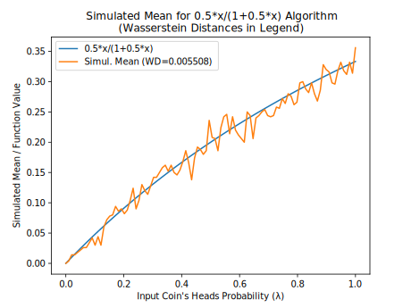 |  |
 |
| 1 - ln(1+x) (Alt. Series) |  |
 |
 |
| 1/(1+x) (Alt. Series) | 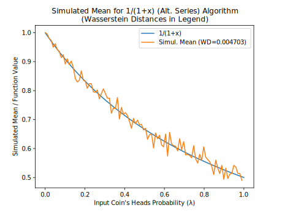 |  |
 |
| 1/(1+x) (Even Parity) | 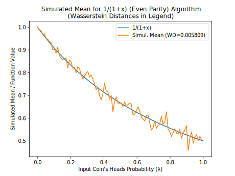 |  |
 |
| 1/(1+x) (Two-Coin Special Case) |  |
 |
 |
| 1/(3+x) |  |
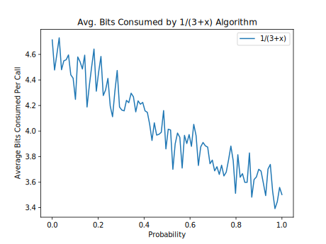 |  |
| 1/(5+x) |  |
 |
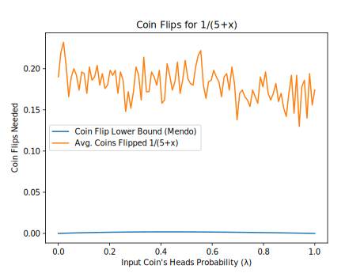 |
| 2014 1.200000 eps=0.050000 |  |
||
| 2014 1.500000 eps=0.050000 |  |
 |
 |
| 2014 2.000000 eps=0.050000 |  |
 |
|
| 2014 3.000000 eps=0.050000 |  |
||
| 2014 5.000000 eps=0.050000 |  |
||
| 2014 Add. x+0.1 |  |
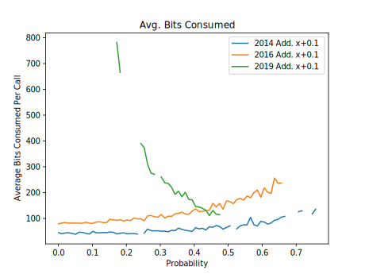 |  |
| 2014 Add. x+0.2 |  |
 |
 |
| 2014 Add. x+0.3 |  |
 |
|
| 2014 Add. x+0.5 |  |
 |
 |
| 2014 Lin. x*1.3 | 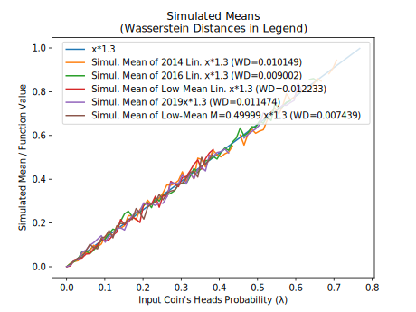 |  |
 |
| 2014 Lin. x*1.5 |  |
 |
 |
| 2014 Lin. x*2.0 |  |
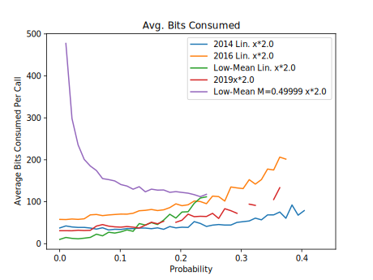 |  |
| 2014 Lin. x*4.0 |  |
 |
 |
| 2014 Lin. x*6.0 |  |
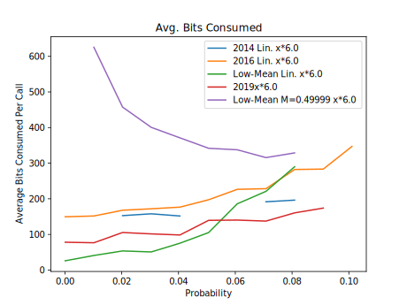 | 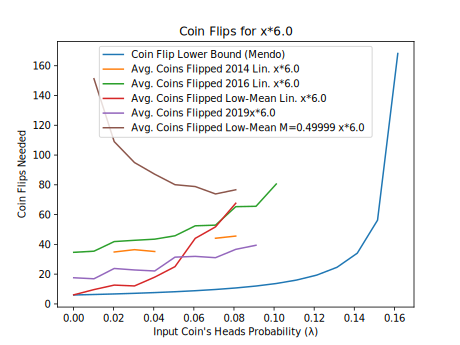 |
| 2014 Lin. x*8.0 |  |
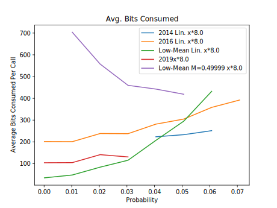 | 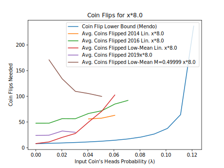 |
| 2016 1.200000 eps=0.050000 |  |
 |
|
| 2016 1.500000 eps=0.050000 |  |
 |
|
| 2016 2.000000 eps=0.050000 |  |
 |
 |
| 2016 3.000000 eps=0.050000 |  |
 |
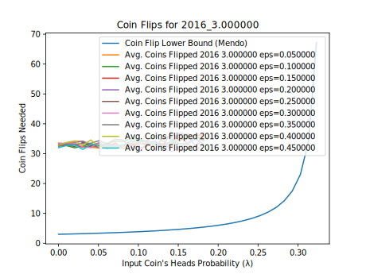 |
| 2016 5.000000 eps=0.050000 |  |
 |
 |
| 2019 1.200000 eps=0.050000 |  |
 |
 |
| 2019 1.500000 eps=0.050000 |  |
 |
 |
| 2019 2.000000 eps=0.050000 |  |
 |
 |
| 2019 3.000000 eps=0.050000 |  |
||
| 2019 5.000000 eps=0.050000 |  |
 |
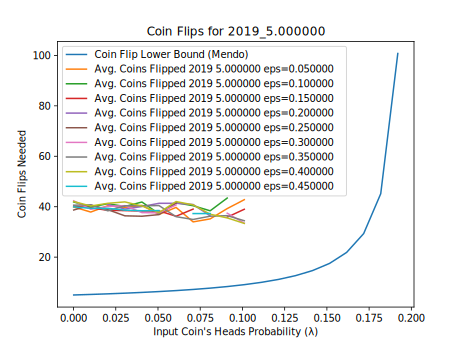 |
| Bernstein 0.2,0.6,0.3 |  |
 |
 |
| arcsin(x)+sqrt(1-x*x)-1 |  |
 |
 |
| arcsin(x)/2 |  |
 |
 |
| arctan(x) (Flajolet) |  |
 |
 |
| arctan(x) (Two-Coin Special Case) |  |
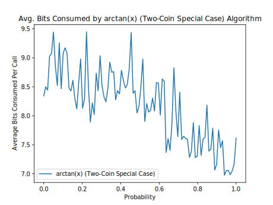 | 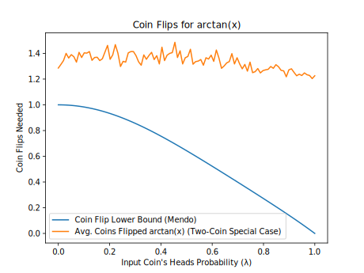 |
| cos(x) |  |
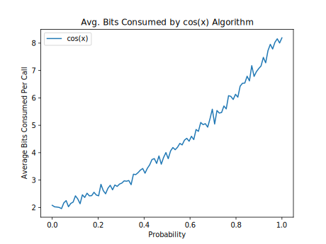 |  |
| exp(-x) (Alg. 2) |  |
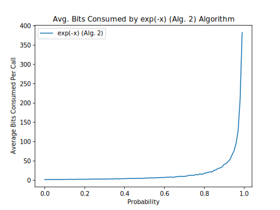 |  |
| exp(-x) (Alt. Series) |  |
 |
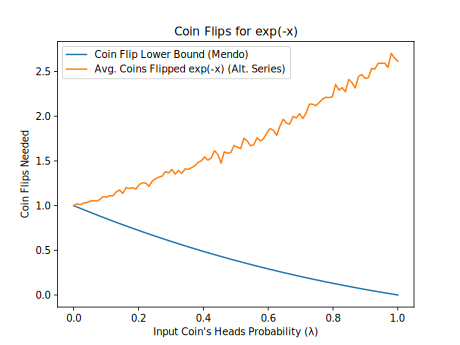 |
| exp(-x) (Flajolet) |  |
 |
 |
| exp(x)*(1-x) |  |
 |
 |
| ln(1+x) (Flajolet) |  |
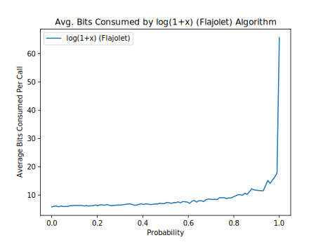 | |
| ln(1+x) (Two-Coin Special Case) | 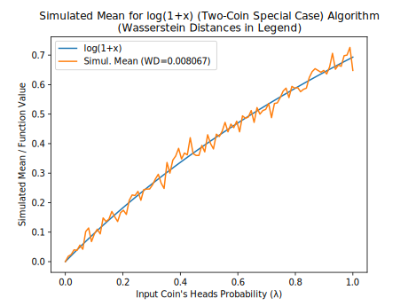 |  |
 |
| pow(x,1/3) | 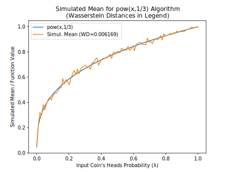 |  |
 |
| pow(x,2/1) |  |
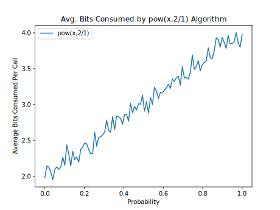 | 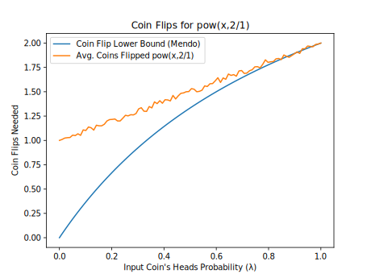 |
| pow(x,2/4) |  |
 |
|
| pow(x,3/4) |  |
 |
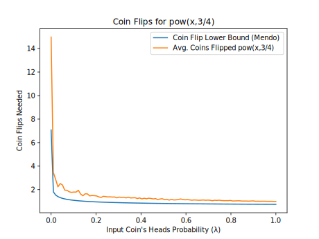 |
| pow(x,4/5) |  |
 |
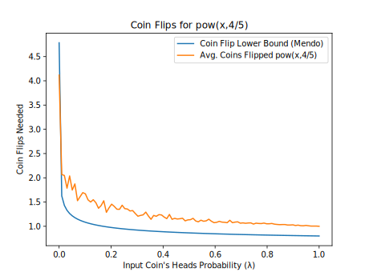 |
| pow(x,5/1) |  |
 |
 |
| pow(x,5/4) |  |
 |
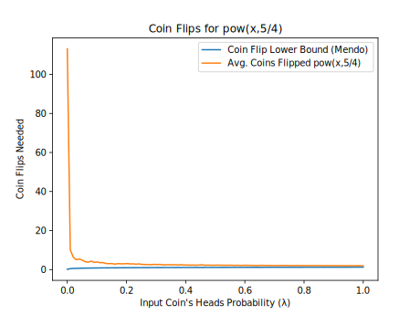 |
| sin(x) |  |
 |
|
| sqrt(x) |  |
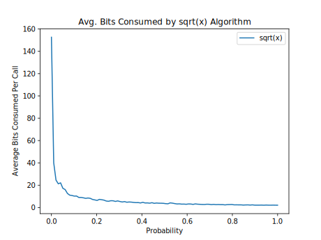 |  |
Notes
- (1) Flajolet, P., Pelletier, M., Soria, M., "On Buffon machines and numbers", arXiv:0906.5560v2 [math.PR], 2010.
- (2) Keane, M. S., and O'Brien, G. L., "A Bernoulli factory", ACM Transactions on Modeling and Computer Simulation 4(2), 1994.
- (3) Huber, M., "Nearly optimal Bernoulli factories for linear functions", arXiv:1308.1562v2 [math.PR], 2014.
- (4) Nacu, Şerban, and Yuval Peres. "Fast simulation of new coins from old", The Annals of Applied Probability 15, no. 1A (2005): 93-115.
- (5) Mendo, Luis. "An asymptotically optimal Bernoulli factory for certain functions that can be expressed as power series." Stochastic Processes and their Applications 129, no. 11 (2019): 4366-4384.
- (6) Łatuszyński, K., Kosmidis, I., Papaspiliopoulos, O., Roberts, G.O., "Simulating events of unknown probabilities via reverse time martingales", arXiv:0907.4018v2 [stat.CO], 2009/2011.
- (7) Devroye, L., Non-Uniform Random Variate Generation, 1986.
- (8) Shaddin Dughmi, Jason D. Hartline, Robert Kleinberg, and Rad Niazadeh. 2017. Bernoulli Factories and Black-Box Reductions in Mechanism Design. In Proceedings of 49th Annual ACM SIGACT Symposium on the Theory of Computing, Montreal, Canada, June 2017 (STOC’17).
- (9) Gonçalves, F. B., Łatuszyński, K. G., Roberts, G. O. (2017). Exact Monte Carlo likelihood-based inference for jump-diffusion processes.
- (10) Another algorithm for this function uses the general martingale algorithm, but uses more bits on average as λ approaches 1. Here, the alternating series is
1 - x + x^2/2 - x^3/3 + ..., whose coefficients are 1, 1, 1/2, 1/3, ... - (11) Vats, D., Gonçalves, F. B., Łatuszyński, K. G., Roberts, G. O. "Efficient Bernoulli factory MCMC for intractable likelihoods", arXiv:2004.07471v1 [stat.CO], 2020.
- (12) Huber, M., "Optimal linear Bernoulli factories for small mean problems", arXiv:1507.00843v2 [math.PR], 2016.
- (13) Morina, G., Łatuszyński, K., et al., "From the Bernoulli Factory to a Dice Enterprise via Perfect Sampling of Markov Chains", arXiv:1912.09229v1 [math.PR], 2019.
- (14) One of the only implementations I could find of this, if not the only, was a Haskell implementation.
- (15) Huber, M., "Designing perfect simulation algorithms using local correctness", arXiv:1907.06748v1 [cs.DS], 2019.
- (16) Lee, A., Doucet, A. and Łatuszyński, K., 2014. Perfect simulation using atomic regeneration with application to Sequential Monte Carlo, arXiv:1407.5770v1 [stat.CO].
- (17) Mossel, Elchanan, and Yuval Peres. New coins from old: computing with unknown bias. Combinatorica, 25(6), pp.707-724.
- (18) Smith, N. A. and Johnson, M. (2007). Weighted and probabilistic context-free grammars are equally expressive. Computational Linguistics, 33(4):477–491.
- (19) Icard, Thomas F., "Calibrating generative models: The probabilistic Chomsky–Schützenberger hierarchy." Journal of Mathematical Psychology 95 (2020): 102308.
- (20) Thomas, A.C., Blanchet, J., "A Practical Implementation of the Bernoulli Factory", arXiv:1106.2508v3 [stat.AP], 2012.
- (21) Goyal, V. and Sigman, K., 2012. On simulating a class of Bernstein polynomials. ACM Transactions on Modeling and Computer Simulation (TOMACS), 22(2), pp.1-5.
- (22) Wästlund, J., "Functions arising by coin flipping", 1999.
- (23) An algebraic function is a function that can be a root of a polynomial system.
- (24) The probability given in Theorem 3.2 of the Flajolet paper, namely just "Σ k = 0, 1, 2, ... (W(k) * (λ/2)k)", appears to be incorrect in conjunction with Figure 4 of that paper.
- (25) Brassard, G., Devroye, L., Gravel, C., "Remote Sampling with Applications to General Entanglement Simulation", Entropy 2019(21)(92), doi:10.3390/e21010092.
- (26) Bill Gosper, "Continued Fraction Arithmetic", 1978.
- (27) Borwein, J.M., Calkin, N.J., et al., "Continued logarithms and associated continued fractions", 2016.
- (28) Canonne, C., Kamath, G., Steinke, T., "The Discrete Gaussian for Differential Privacy", arXiv:2004.00010v2 [cs.DS], 2020.
- (29) Forsythe, G.E., "Von Neumann's Comparison Method for Random Sampling from the Normal and Other Distributions", Mathematics of Computation 26(120), October 1972.
- (30) von Neumann, J., "Various techniques used in connection with random digits", 1951.
- (31) Pae, S., "Random number generation using a biased source", dissertation, University of Illinois at Urbana-Champaign, 2005.
- (32) Peres, Y., "Iterating von Neumann's procedure for extracting random bits", Annals of Statistics 1992,20,1, p. 590-597.
- (33) Kozen, D., "Optimal Coin Flipping", 2014.
- (34) Devroye, L., Gravel, C., "Sampling with arbitrary precision", arXiv:1502.02539v5 [cs.IT], 2015.
- (35) As used here and in the Flajolet paper, a geometric random number is the number of successes before the first failure, where the success probability is λ.
- (36) Flajolet, P., Sedgewick, R., Analytic Combinatorics, Cambridge University Press, 2009.
- (37) Monahan, J.. "Extensions of von Neumann’s method for generating random variables." Mathematics of Computation 33 (1979): 1065-1069.
Appendix
Randomized vs. Non-Randomized Algorithms
A non-randomized algorithm is a simulation algorithm that uses nothing but the input coin as a source of randomness (in contrast to randomized algorithms, which do use other sources of randomness) (Mendo 2019)(5). Instead of generating outside randomness, a randomized algorithm can implement a randomness extraction procedure to generate that randomness using the input coins themselves. In this way, the algorithm becomes a non-randomized algorithm. For example, if an algorithm implements the two-coin special case by generating a random bit in step 1, it could replace generating that bit with flipping the input coin twice until the flip returns 0 then 1 or 1 then 0 this way, then taking the result as 0 or 1, respectively (von Neumann 1951)(30).
In fact, there is a lower bound on the average number of coin flips needed to turn a coin with one bias (λ) into a coin with another bias (τ = f(λ)). It's called the entropy bound (see, e.g., (Pae 2005)(31), (Peres 1992)(32)) and is calculated as—
((τ − 1) * ln(1 − τ) − τ * ln(τ)) /
((λ − 1) * ln(1 − λ) − λ * ln(λ)).
For example, if f(λ) is a constant, non-randomized algorithms will generally require a growing number of coin flips to simulate that constant if the input coin is strongly biased towards heads or tails (the bias is λ). Note that this formula only works if nothing but coin flips is allowed as randomness. (For certain values of λ, Kozen (2014)(33) showed a tighter lower bound of this kind, but this bound is non-trivial and assumes λ is known.)
Simulating Probabilities vs. Estimating Probabilities
A Bernoulli factory or another algorithm that produces heads with a given probability acts as an unbiased estimator for that probability (Łatuszyński et al. 2009/2011)(6). (In this note, an unbiased probability estimator is an unbiased estimator whose estimates are in [0, 1] almost surely.) As a result—
- finding in some way an unbiased estimate of the input coin's probability of heads (λ), such as by flipping the coin many times and averaging the results;
- calculating v = f(λ);
- generating a uniform random number in [0,1], call it u; and
- returning 1 if u is less than v, or 0 otherwise,
will simulate the probability f(λ) in theory. In practice, however, this method is prone to numerous errors, including estimation error in step 1, and rounding and approximation errors in steps 2 and 3. For this reason and also because "exact sampling" is the focus of this page, this document does not cover algorithms that directly estimate λ (such as in step 1). As (Mossel and Peres 2005)(17) says: "The difficulty here is that [λ] is unknown. It is easy to estimate [λ], and therefore [f(λ)]. However, to get a coin with an exact bias [f(λ)] is harder", and that is what Bernoulli factory algorithms are designed to do.
As also shown in (Łatuszyński et al. 2009/2011)(6), however, if f(λ) can't serve as a factory function, no unbiased probability estimator of that function is possible, since sampling it isn't possible. For example, function A can't serve as a factory function, so no simulator (or unbiased probability estimator) for that function is possible. This is possible for function B, however (Keane and O'Brien 1994)(2).
- Function A: 2 * λ, when λ lies in (0, 1/2).
- Function B: 2 * λ, when λ lies in (0, 1/2 − ϵ), where ϵ is in (0, 1/2).
Convergence of Bernoulli Factories
The following Python code illustrates how to test a Bernoulli factory algorithm for convergence to the correct probability, as well as the speed of this convergence. In this case, we are testing the Bernoulli factory algorithm of xy/z, where x is in the interval (0, 1) and y/z is greater than 0. Depending on the parameters x, y, and z, this Bernoulli factory converges faster or slower.
# Parameters for the Bernoulli factory x**(y/z) x=0.005 # x is the input coin's probability of heads y=2 z=3 # Print the desired probability print(x**(y/z)) passp = 0 failp = 0 # Set cumulative probability to 1 cumu = 1 iters=4000 for i in range(iters): # With probability x, the algorithm returns 1 (heads) prob=(x);prob*=cumu; passp+=prob; cumu-=prob # With probability (y/(z*(i+1))), the algorithm returns 0 (tails) prob=(y/(z*(i+1)));prob*=cumu; failp+=prob; cumu-=prob # Output the current probability in this iteration, # but only for the first 30 and last 30 iterations if i<30 or i>=iters-30: print(passp)
As this code shows, as x (the probability of heads of the input coin) approaches 0, the convergence rate gets slower and slower, even though the probability will eventually converge to the correct one. In fact, when y/z is less than 1:
- The average number of coin flips needed by this algorithm will grow without bound as x approaches 0, and Mendo (2019)(5) showed that this is a lower bound; that is, no Bernoulli factory algorithm can do much better without knowing more information on x.
- xy/z has a slope that tends to a vertical slope near 0, so that the so-called Lipschitz condition is not met at 0. And (Nacu and Peres 2005, propositions 10 and 23)(4) showed that the Lipschitz condition is necessary for a Bernoulli factory to have an upper bound on the average running time.
Thus, a practical implementation of this algorithm may have to switch to an alternative implementation (such as the one described in the next section) when it detects that the first few digits (after the point) of the uniform random number's fractional part are zeros.
Alternative Implementation of Bernoulli Factories
Say we have a Bernoulli factory algorithm that takes a coin with probability of heads of p and outputs 1 with probability f(p). If this algorithm takes a partially-sampled uniform random number (PSRN) as the input coin and flips that coin using SampleGeometricBag (a method described in my article on PSRNs), the algorithm could instead be implemented as follows in order to return 1 with probability f(U), where U is the number represented by the uniform PSRN (see also (Brassard et al., 2019)(25), (Devroye 1986, p. 769)(7), (Devroye and Gravel 2015)(34). This algorithm assumes the uniform PSRN's sign is positive and its integer part is 0.
- Set v to 0 and k to 1.
- Set v to b * v + d, where b is the base (or radix) of the uniform PSRN's digits, and d is a digit chosen uniformly at random.
- Calculate an approximation of f(U) as follows:
- Set n to the number of items (sampled and unsampled digits) in the uniform PSRN's fractional part.
- Of the first n digits (sampled and unsampled) in the PSRN's fractional part, sample each of the unsampled digits uniformly at random. Then let uk be the PSRN's digit expansion up to the first n digits after the point.
- Calculate the lowest and highest values of f in the interval [uk, uk + b−n], call them fmin and fmax. If abs(fmin − fmax) <= 2 * b−k, calculate (fmax + fmin) / 2 as the approximation. Otherwise, add 1 to n and go to the previous substep.
- Let pk be the approximation's digit expansion up to the k digits after the point. For example, if f(U) is π, b is 10, and k is 2, pk is 314.
- If pk + 1 <= v, return 0. If pk − 2 >= v, return 1. If neither is the case, add 1 to k and go to step 2.
However, the focus of this article is on algorithms that don't rely on calculations of irrational numbers, which is why this section is in the appendix.
Correctness Proof for the Continued Logarithm Simulation Algorithm
Theorem. The algorithm given in "Continued Logarithms" returns 1 with probability exactly equal to the number represented by the continued logarithm c, and 0 otherwise.
Proof. This proof of correctness takes advantage of Huber's "fundamental theorem of perfect simulation" (Huber 2019)(15). Using Huber's theorem requires proving two things:
- First, we note that the algorithm clearly halts almost surely, since step 1 will stop the algorithm if it reaches the last coefficient, and step 2 always gives a chance that the algorithm will return a value, even if it's called recursively or the number of coefficients is infinite.
- Second, we show the algorithm is locally correct when the recursive call in step 3 is replaced with an oracle that simulates the correct "continued sub-logarithm". If step 1 reaches the last coefficient, the algorithm obviously passes with the correct probability. Otherwise, we will be simulating the probability (1 / 2c[i]) / (1 + x), where x is the "continued sub-logarithm" and will be at most 1 by construction. Steps 2 and 3 define a loop that divides the probability space into three pieces: the first piece takes up one half, the second piece (step 3) takes up a portion of the other half (which here is equal to x/2), and the last piece is the "rejection piece" that reruns the loop. Since this loop changes no variables that affect later iterations, each iteration acts like an acceptance/rejection algorithm already proved to be a perfect simulator by Huber. The algorithm will pass at step 2 with probability p = (1 / 2c[i]) / 2 and fail either at step 2 with probability f1 = (1 − 1 / 2c[i]) / 2, or at step 3 with probability f2 = x/2 (all these probabilities are relative to the whole iteration). Finally, dividing the passes by the sum of passes and fails (p / (p + f1 + f2)) leads to (1 / 2c[i]) / (1 + x), which is the probability we wanted.
Since both conditions of Huber's theorem are satisfied, this completes the proof. □
Correctness Proof for Continued Fraction Simulation Algorithm 3
Theorem. Suppose a generalized continued fraction's partial numerators are b[i] and all greater than 0, and its partial denominators are a[i] and all greater than 0, and suppose further that each b[i]/a[i] is 1 or less. Then the algorithm given as Algorithm 3 in "Continued Fractions" returns 1 with probability exactly equal to the number represented by that continued fraction, and 0 otherwise.
Proof. We use Huber's "fundamental theorem of perfect simulation" again in the proof of correctness.
- The algorithm halts almost surely for the same reason as the similar continued logarithm simulator.
- If the call in step 3 is replaced with an oracle that simulates the correct "sub-fraction", the algorithm is locally correct. If step 1 reaches the last element of the continued fraction, the algorithm obviously passes with the correct probability. Otherwise, we will be simulating the probability b[i] / (a[i] + x), where x is the "continued sub-fraction" and will be at most 1 by assumption. Steps 2 and 3 define a loop that divides the probability space into three pieces: the first piece takes up a part equal to h = a[i]/(a[i] + 1), the second piece (step 3) takes up a portion of the remainder (which here is equal to x * (1 − h)), and the last piece is the "rejection piece". The algorithm will pass at step 2 with probability p = (b[i] / a[pos]) * h and fail either at step 2 with probability f1 = (1 − b[i] / a[pos]) * h, or at step 3 with probability f2 = x * (1 − h) (all these probabilities are relative to the whole iteration). Finally, dividing the passes by the sum of passes and fails leads to b[i] / (a[i] + x), which is the probability we wanted, so that both of Huber's conditions are satisfied and we are done. □
The von Neumann Schema
(Flajolet et al., 2010)(1) describes what it calls the von Neumann schema (sec. 2). Although the von Neumann schema is used in several Bernoulli factories given here, it's not a Bernoulli factory itself since it could produce random numbers other than 0 and 1, which is why this section appears in the appendix. Given a permutation class and an input coin, the von Neumann schema generates a random non-negative integer n with probability equal to—
- (λn * V(n) / n!) / EGF(λ),
where—
- EGF(λ) = Σk = 0, 1, ... (λk * V(k) / k!) (the exponential generating function or EGF, which completely determines a permutation class), and
- V(n) is the number of valid permutations of size n (and must be in the interval [0, n!]).
Effectively, a geometric(λ) random number G(35) is accepted with probability V(G)/G! (where G! is the number of possible permutations of size G, or 1 if G is 0), and rejected otherwise. The probability that r geometric random numbers are rejected this way is p*(1 − p)r, where p = (1 − λ) * EGF(λ).
Examples of permutation classes include—
- single-cycle permutations (EGF(λ) = Cyc(λ) = ln(1/(1 − λ)); V(n) = (n − 1)!)
- sorted permutations (EGF(λ) = Set(λ) = exp(λ); V(n) = 1),
- all permutations (EGF(λ) = Seq(λ) = 1/(1 − λ); V(n) = n!),
- alternating permutations of even size (EGF(λ) = 1/cos(λ); the V(n) starting at n = 0 is A000364 in the On-Line Encyclopedia of Integer Sequences), and
- alternating permutations of odd size (EGF(λ) = tan(λ); the V(n) starting at n = 0 is A000182),
using the notation in "Analytic Combinatorics" (Flajolet and Sedgewick 2009)(36).
The following algorithm generates a random number that follows the von Neumann schema.
- Set r to 0. (This is the number of times the algorithm rejects a random number.)
- Flip the input coin until the flip returns 0. Then set G to the number of times the flip returns 1 this way.
- With probability V(G)/G!, return G (or r if desired). (In practice, the probability check is done by generating G uniform random numbers and determining whether those numbers satisfy the given permutation class, or generating as many of those numbers as necessary to make this determination. This is especially because G!, the factorial of G, can easily become very large.)
- Add 1 to r and go to step 2.
A variety of Bernoulli factory probability functions can arise from the von Neumann schema, depending on the EGF and which values of G and/or r the Bernoulli factory algorithm treats as heads or tails. The following Python functions use the SymPy computer algebra library to find probabilities and other useful information for applying the von Neumann schema, given a permutation class's EGF.
def coeffext(f, x, power):
# Extract a coefficient from a generating function
# NOTE: Can also be done with just the following line:
# return diff(f,(x,power)).subs(x,0)/factorial(power)
px = 2
for i in range(10):
try:
poly=Poly(series(f, x=x, n=power+px).removeO())
if power == 0:
return poly.coeff_monomial(1)
return poly.as_expr().coeff(x**power)
except:
px+=2
# Failed, assume 0
return 0
def number_n_prob(f, x, n):
# Probability that the number n is generated
# for the von Neumann schema with the given
# exponential generating function (e.g.f.)
# Example: number_n_prob(exp(x),x,1) --> x**exp(-x)
return (x**n*coeffext(f, x, n))/f
def r_rejects_prob(f, x, r):
# Probability that the von Neumann schema
# with the given e.g.f. will reject r random numbers
# before accepting the next one
p=(1-x)*f
return p*(1-p)**r
def valid_perm(f, x, n):
# Number of valid permutations of size n for the
# von Neumann schema with the given e.g.f.
return coeffext(f, x, n)*factorial(n)
Note: The von Neumann schema can simulate any power series distribution (such as Poisson, negative binomial, geometric, and logarithmic series), given a suitable exponential generating function.
Probabilities Arising from the Forsythe Method
The Forsythe method of random sampling (Forsythe 1972)(29) gives rise to a class of interesting probability functions.
Let D and E be two probability distributions. Draw one number from D (δ). Then draw numbers from E (e1, e2, etc.) until a number drawn this way is greater than the previous drawn number (which can be δ). Then count the numbers drawn from E this way, call the count k. Then the probability that δ is less than x given that—
- k is odd is (∫(−∞, x) exp(−ECDF(z)) * DPDF(z) dz) / (∫(−∞, ∞) exp(−ECDF(z)) * DPDF(z) dz) (Formula 1; see Theorem 2.1(iii) of (Devroye 1986, Chapter IV)(7)), or
- k is even is (∫(−∞, x) (1 − exp(−ECDF(z))) * DPDF(z) dz) / (∫(−∞, ∞) (1 − exp(−ECDF(z))) * DPDF(z) dz) (Formula 2; see also (Monahan 1979)(37)),
where DPDF is the probability density function (PDF) of D, and ECDF is the cumulative distribution function (CDF) of E. For example, the algorithm to simulate erf(x)/erf(1) uses the fact that when—
- DPDF is the uniform(0,1) distribution's PDF, which is 1 in the interval [0, 1] and 0 elsewhere, and
- ECDF is the CDF for the maximum of two uniform(0,1) random numbers, which is simply z2,
then Formula 1 above becomes—
- (∫[0, x] exp(−(z2)) dz) / (∫[0, 1] exp(−(z2)) dz), (Formula 3)
and thus erf(x)/erf(1). If the last step in the algorithm reads "Return 0" rather than "Go to step 1", then the algorithm simulates the probability erf(x)*sqrt(π)/2 (and the denominator in Formulas 1 and 3 becomes 1).
Probabilities Arising from Certain Permutations
Consider the following algorithm:
- Generate a uniform(0, 1) random number u, then set k to 1.
- Generate another uniform(0, 1) random number v.
- If k is odd and u is less than v, or if k is even and v is less than u, return k.
- Set u to v, then add 1 to k, then go to step 2.
This algorithm generates an alternating sequence of a random length, and in doing so, it returns the number n with the following probability:
C(n) = (1 − an + 1/(an * (n + 1)) ) * (1 − Σj = 0, ..., n − 1 C(j) )
= (an * (n + 1) − an + 1) / (n + 1)!,
where ai is the integer at position i (starting at 0) of the sequence A000111 in the On-Line Encyclopedia of Integer Sequences.
Inspired by the von Neumann schema given earlier in this appendix, we can extend the algorithm to certain kinds of permutation as follows:
- Create an empty list.
- Generate a uniform(0, 1) random number u, and append u to the end of the list.
- If the items in the list do not form a valid permutation, return the number of items in the list minus 1. Otherwise, go to step 2.
This algorithm returns the number n with the following probability:
G(n) = (1 − V(n + 1)/(V(n) * (n + 1)) ) * (1 − Σj = 0, ..., n − 1 G(j) )
= (V(n) * (n + 1) − V(n + 1)) / (V(0) * (n + 1)!),
where V(n) is the number of valid permutations of size n. For this algorithm, V(n) must be in the interval (0, n!] (thus, for example, this formula won't work if there are 0 permutations of odd size). V(n) can be a sequence associated with an exponential generating function (EGF) for the kind of permutation involved in the algorithm, and examples of EGFs were given in the section on the von Neumann schema. For example, the first algorithm in this section expresses the special case of alternating permutations and corresponds to the EGF tan(λ)+1/cos(λ).
For either algorithm, the probability that the generated n—
- is odd is 1 − 1 / EGF(1), or
- is even is 1 / EGF(1), or
- is less than k is (V(0) − V(k)/(k!)) / V(0).
For example, if the second algorithm treats sorted permutations as valid (making the EGF exp(λ)), then the algorithm returns an odd number with probability 1 − 1/exp(1). If that algorithm instead treats alternating permutations as valid (making the EGF tan(λ)+1/cos(λ)), then the algorithm returns an odd number with probability 1 − 1/(tan(1)+1/cos(1)).
Open Questions:
- In the first algorithm, what is the probability of generating a random number n (or generating any of a set of values of n)—
- if u (step 1) has an arbitrary (not necessarily uniform) distribution?
- if v (step 2) follows the same but arbitrary distribution?
- if the previous two conditions are given?
- In the second algorithm, what is the probability of generating a random number n (or generating any of a set of values of n)—
- if the first random number in the list has an arbitrary (not necessarily uniform) distribution?
- if each random number in the list beyond the first follows the same but arbitrary distribution?
- if the previous two conditions are given?
- In the second algorithm, what distribution does the first number in the list follow when the algorithm returns n (or one of a set of values of n), with or without the conditions given in question 2? For example, if the algorithm treats sorted permutations as valid, it is known since von Neumann's 1951 algorithm that that number has a truncated exponential distribution when the algorithm returns an odd value of n.
Other Algorithms for exp(−λ)
The following two algorithms also simulate exp(−λ), but converge slowly as λ approaches 1.
The algorithm in (Flajolet et al., 2010)(1) calls for generating a Poisson(λ) random number and returning 1 if that number is 0, or 0 otherwise. The Poisson generator in turn involves generating a geometric(λ) random number G(35), then G uniform random numbers, then returning G only if all G uniform numbers are sorted (see "The von Neumann Schema" in the appendix). The algorithm follows.
- Flip the input coin until the flip returns 0. Then set G to the number of times the flip returns 1 this way.
- If G is 0, return 1.
- Generate a uniform(0, 1) random number w, and set i to 1.
- While i is less than G:
- Generate a uniform(0, 1) random number U.
- If w is less than U, break out of this loop and go to step 1.
- Add 1 to i, and set w to U.
- Return 0. (G is now a Poisson(λ) random number, but is other than 0.)
An alternative version of the algorithm above doesn't generate a geometric random number at the outset.
- Set k and w each to 0.
- Flip the input coin. If the flip returns 0 and k is 0, return 1. Otherwise, if the flip returns 0, return 0.
- Generate a uniform(0, 1) random number U.
- If k > 0 and w is less than U, go to step 1.
- Set w to U, add 1 to k, and go to step 2.
Sketch of Derivation of the Algorithm for 1 / π
The Flajolet paper presented an algorithm to simulate 1 / π but provided no derivation. Here is a sketch of how this algorithm works.
The algorithm is an application of the convex combination technique. Namely, 1 / π can be seen as a convex combination of two components:
- g(n): 26 * n * (6 * n + 1) / 28 * n + 2 = 2−2 * n * (6 * n + 1) / 4 = (6 * n + 1) / (22 * n + 2), which is the probability that the sum of two geometric(1/4) random numbers(35) and one Bernoulli(5/9) random number, all of which are independent, equals n. This corresponds to step 1 of the convex combination algorithm and steps 2 through 4 of the 1 / π algorithm. (This also shows that there may be an error in the identity for 1 / π given in the Flajolet paper: the "8 n + 4" should probably read "8 n + 2".)
- Note 1: 9 * (n + 1) / (22 * n + 4) is the probability that the sum of two independent geometric(1/4) random numbers equals n.
- Note 2: pn * (1 − p)m * choose(n + m − 1, m − 1) is the probability that the sum of m independent geometric(p) random numbers equals n (a negative binomial distribution).
- Note 3: f(z) * (1 − p) + f(z − 1) * p is the probability that the sum of two independent random numbers — a Bernoulli(p) number and a number z with probability function f(.) — equals z.
- hn(): (choose(n * 2, n) / 2n * 2)3, which is the probability of heads of the "coin" numbered n. This corresponds to step 2 of the convex combination algorithm and step 5 of the 1 / π algorithm.
License
Any copyright to this page is released to the Public Domain. In case this is not possible, this page is also licensed under Creative Commons Zero.